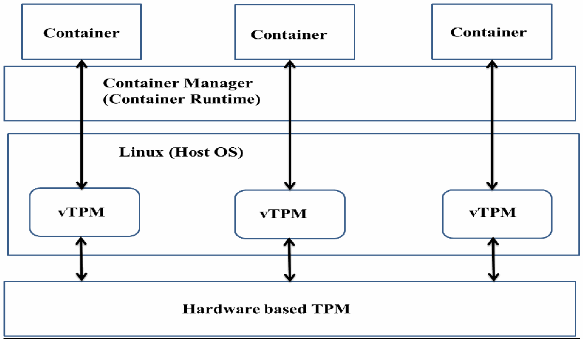

NIST IR 8176 日本語訳
英語タイトル : Security Assurance Requirements for Linux Application Container Deployments日本語タイトル : Linux アプリケーションコンテナ配備のセキュリティ保証要件
公開日 : 2017-10-11
原文URL : https://csrc.nist.gov/pubs/ir/8176/final
翻訳編集 : 自動生成（有志による非公式の日本語訳）, 原文取得日 : 2026-10-31, 訳文 : 303 / 304 ブロック
[要約] NIST IR 8176 は、Linux 基盤上のアプリケーションコンテナの配備について、セキュリティソリューションが満たさなければならないセキュリティ保証要件を示す報告書です。NIST SP 800-190（Application Container Security Guide）が提案したセキュリティガイドラインと対策を実装するセキュリティソリューションを分析し、その有効性を評価するための要件を詳細に示すことを目的としています。本書は、ハードウェアベースのセキュリティソリューションに加え、ホスト OS の保護、コンテナランタイムの構成、イメージ完全性、イメージレジストリの保護、オーケストレーション機能の保証要件を扱います。一部のセキュリティソリューションによる悪影響についても取り上げています。
NISTIR 8176
NISTIR 8176
Security Assurance Requirements for Linux Application Container Deployments
Linux アプリケーションコンテナ配備のセキュリティ保証要件
Ramaswamy Chandramouli
Ramaswamy Chandramouli
This publication is available free of charge from:
本刊行物は次の場所から無料で入手できます。
https://doi.org/10.6028/NIST.IR.8176
https://doi.org/10.6028/NIST.IR.8176
［NIST のロゴ。公的な標章のため、この非公式サイトには掲載していません。原本 PDF を参照してください。］
NISTIR 8176
NISTIR 8176
Security Assurance Requirements for Linux Application Container Deployments
Linux アプリケーションコンテナ配備のセキュリティ保証要件
Ramaswamy Chandramouli
Computer Security Division
Information Technology Laboratory
Ramaswamy Chandramouli
コンピュータセキュリティ部門
情報技術研究所
This publication is available free of charge from:
本刊行物は次の場所から無料で入手できます。
https://doi.org/10.6028/NIST.IR.8176
https://doi.org/10.6028/NIST.IR.8176
October 2017
2017 年 10 月
U.S. Department of Commerce
Wilbur L. Ross, Jr., Secretary
米国商務省
Wilbur L. Ross, Jr. 長官
National Institute of Standards and Technology
Walter Copan, NIST Director and Under Secretary of Commerce for Standards and Technology
米国国立標準技術研究所
Walter Copan、NIST 所長兼商務次官（標準・技術担当）
National Institute of Standards and Technology Internal Report 8176
37 pages (October 2017)
米国国立標準技術研究所 内部報告書 8176
37 ページ（2017 年 10 月）
This publication is available free of charge from: https://doi.org/10.6028/NIST.IR.8176
本刊行物は次の場所から無料で入手できます: https://doi.org/10.6028/NIST.IR.8176
Certain commercial entities, equipment, or materials may be identified in this document in order to describe an experimental procedure or concept adequately. Such identification is not intended to imply recommendation or endorsement by NIST, nor is it intended to imply that the entities, materials, or equipment are necessarily the best available for the purpose.
本書では、実験的な手順や概念を適切に説明するために、特定の商業的主体、機器、材料に言及している場合があります。そのような言及は、NIST による推奨や推薦を意味するものではなく、それらの主体、材料、機器が目的に照らして必ずしも最良であることを意味するものでもありません。
There may be references in this publication to other publications currently under development by NIST in accordance with its assigned statutory responsibilities. The information in this publication, including concepts and methodologies, may be used by federal agencies even before the completion of such companion publications. Thus, until each publication is completed, current requirements, guidelines, and procedures, where they exist, remain operative. For planning and transition purposes, federal agencies may wish to closely follow the development of these new publications by NIST.
本刊行物には、NIST が法令で課された責務に従って現在策定中の他の刊行物への言及が含まれる場合があります。概念や方法論を含む本刊行物の情報は、そうした関連刊行物の完成前であっても、連邦機関が利用できます。したがって、各刊行物が完成するまでは、現行の要件、ガイドライン、手順が存在する場合には、それらが引き続き有効です。計画および移行のため、連邦機関は、NIST によるこれらの新しい刊行物の策定状況を注意深く追うことを検討してもよいです。
Organizations are encouraged to review all draft publications during public comment periods and provide feedback to NIST. Many NIST cybersecurity publications, other than the ones noted above, are available at https://csrc.nist.gov/publications.
各組織は、パブリックコメント期間中にすべてのドラフト刊行物を確認し、NIST にフィードバックを提供するよう促されています。上記以外の NIST のサイバーセキュリティ関連刊行物の多くは、https://csrc.nist.gov/publications で入手できます。
Comments on this publication may be submitted to:
本刊行物へのコメントは次の宛先に提出できます。
National Institute of Standards and Technology
Attn: Computer Security Division, Information Technology Laboratory
100 Bureau Drive (Mail Stop 8930) Gaithersburg, MD 20899-8930
Email: NISTIR8176@nist.gov
National Institute of Standards and Technology
Attn: Computer Security Division, Information Technology Laboratory
100 Bureau Drive (Mail Stop 8930) Gaithersburg, MD 20899-8930
Email: NISTIR8176@nist.gov
All comments are subject to release under the Freedom of Information Act (FOIA).
すべてのコメントは、情報自由法（FOIA）に基づく公開の対象となります。
Reports on Computer Systems Technology
コンピュータシステム技術に関する報告書
The Information Technology Laboratory (ITL) at the National Institute of Standards and Technology (NIST) promotes the U.S. economy and public welfare by providing technical leadership for the Nation’s measurement and standards infrastructure. ITL develops tests, test methods, reference data, proof-of-concept implementations, and technical analyses to advance the development and productive use of information technology. ITL’s responsibilities include the development of management, administrative, technical, and physical standards and guidelines for the cost-effective security and privacy of other than national security-related information in federal information systems.
米国国立標準技術研究所（NIST）の情報技術研究所（ITL）は、国の測定・標準基盤に対する技術的リーダーシップを提供することで、米国の経済と公共の福祉を促進しています。ITL は、情報技術の発展と生産的な利用を進めるため、テスト、テスト方法、参照データ、概念実証実装、技術分析を開発しています。ITL の責務には、連邦情報システム内の国家安全保障関連情報以外の情報について、費用対効果の高いセキュリティとプライバシーを実現するための管理面・運用面・技術面・物理面の標準とガイドラインの策定が含まれます。
Abstract
概要
Application Containers are slowly finding adoption in enterprise IT infrastructures. Security guidelines and countermeasures have been proposed to address security concerns associated with the deployment of application container platforms. To assess the effectiveness of the security solutions implemented based on these recommendations, it is necessary to analyze those solutions and outline the security assurance requirements they must satisfy to meet their intended objectives. This is the contribution of this document. The focus is on application containers on a Linux platform.
アプリケーションコンテナは、エンタープライズの IT インフラストラクチャで徐々に採用が進んでいます。アプリケーションコンテナ基盤の配備に伴うセキュリティ上の懸念に対処するため、セキュリティガイドラインと対策が提案されてきました。これらの推奨事項に基づいて実装されたセキュリティソリューションの有効性を評価するには、それらのソリューションを分析し、意図した目的を達成するために満たさなければならないセキュリティ保証要件を示す必要があります。これが本書の貢献です。焦点は、Linux 基盤上のアプリケーションコンテナにあります。
Keywords
キーワード
application container; capabilities; Cgroups; container image; container registry; kernel loadable module; Linux kernel; namespace; Trusted Platform Module.
application container; capabilities; Cgroups; container image; container registry; kernel loadable module; Linux kernel; namespace; Trusted Platform Module.
Acknowledgments
謝辞
The author is thankful to Serban Gavrila for technical feedback and to Isabel Van Wyk for her editorial review.
著者は、技術面のフィードバックを提供してくれた Serban Gavrila と、編集面のレビューを行ってくれた Isabel Van Wyk に感謝します。
Audience
想定読者
The target audience for this document includes system architects and system administrators for container stacks in enterprise infrastructures or in infrastructures used for offering container services as part of an overall cloud service.
本書の想定読者には、エンタープライズのインフラストラクチャ、またはクラウドサービス全体の一部としてコンテナサービスを提供するインフラストラクチャにおいて、コンテナスタックを担当するシステムアーキテクトとシステム管理者が含まれます。
Trademark Information
商標情報
All registered trademarks or trademarks belong to their respective organizations.
登録商標または商標はすべて、それぞれの組織に帰属します。
Executive Summary
エグゼクティブサマリー
Application containers are now slowly finding adoption in production environments due to the following advantages: short development and deployment cycle, resource efficiency through lightweight virtualization, and availability of tools for automating the processes involved. At the same time, addressing security concerns during deployment is equally important to the enterprise. To address these concerns, security guidelines and countermeasures have been proposed by NIST through the Application Container Security Guide (NIST Special Publication 800-190) (referred to in this document as the Container Security Guide).
アプリケーションコンテナは、開発・配備サイクルが短いこと、軽量な仮想化によってリソース効率が高いこと、関連する工程を自動化するツールが利用できることといった利点から、本番環境で徐々に採用が進んでいます。同時に、配備時のセキュリティ上の懸念に対処することも、エンタープライズにとって同様に重要です。こうした懸念に対処するため、NIST は Application Container Security Guide（NIST Special Publication 800-190。本書では Container Security Guide と呼びます）を通じて、セキュリティガイドラインと対策を提案しました。
The Container Security Guide identified security threats to the components of the platform hosting the containers and related artifacts involved in building containers and storing them prior to launch. Taking into consideration the overall security implications for the entire ecosystem involving containers, the document also provided security countermeasures for and through six entities including Hardware, Host Operating System (OS), Container Runtime, Image, Registry and Orchestrator.
Container Security Guide は、コンテナをホストする基盤の構成要素に対する脅威、およびコンテナの構築や起動前の保管に関わる関連成果物に対する脅威を特定しました。コンテナを含むエコシステム全体へのセキュリティ上の影響を考慮して、同書は、ハードウェア、ホストオペレーティングシステム（OS）、コンテナランタイム、イメージ、レジストリ、オーケストレーターの6つの主体それぞれについて、各主体に適用する対策と各主体を通じて実施する対策も示しました。
To carry out these recommendations in the form of countermeasures, one or more security solutions are needed. For these security solutions to effectively meet their security objectives, it is necessary to analyze those security solutions and detail the metrics they must satisfy in the form of security assurance requirements. This is the objective and contribution of this document.
これらの推奨事項を対策として実行するには、1 つ以上のセキュリティソリューションが必要です。これらのセキュリティソリューションがセキュリティ目的を効果的に達成するためには、それらを分析し、満たさなければならない指標をセキュリティ保証要件の形で詳細に示す必要があります。これが本書の目的であり、貢献です。
Linux and its various distributions form the predominant host OS component of the deployed container platforms. Since they are open-source products, sufficient security related information is available to analyze the security solutions that can be configured using features provided by Linux. Hence the focus of this document is on security assurance requirements for security solutions for application containers hosted on Linux. The target audience includes system security architects and administrators who are responsible for the actual design and deployment of security solutions in enterprise infrastructures hosting containerized hosts.
Linux と各種ディストリビューションは、配備されているコンテナ基盤のホスト OS 構成要素の主流を占めています。これらはオープンソース製品であるため、Linux が提供する機能を使って構成できるセキュリティソリューションを分析するのに十分なセキュリティ関連情報が入手できます。そのため、本書は、Linux 上でホストされるアプリケーションコンテナ向けのセキュリティソリューションに対するセキュリティ保証要件に焦点を当てます。想定読者には、コンテナ化されたホストを運用するエンタープライズのインフラストラクチャにおいて、セキュリティソリューションの実際の設計と配備を担当するシステムセキュリティアーキテクトと管理者が含まれます。
Table of Contents
目次
List of Appendices
付録一覧
List of Figures
図の一覧
List of Tables
表の一覧
1 Introduction
1 はじめに
Application containers are now slowly finding adoption in production environments due to the following advantages: short development and deployment cycle, resource efficiency through lightweight virtualization, and availability of tools for automating the processes involved. To address the security concerns in these environments, the Application Container Security Guide (National Institute of Technology (NIST) Special Publication 800-190) [1] (referred to in the rest of this document as the Container Security Guide) identified security threats to the components of the platform hosting the containers as well as related artifacts involved in building containers and storing them prior to launch. Taking into consideration the overall security implications for the entire ecosystem involving containers, the Container Security Guide also provided security countermeasures for and through six entities including Hardware, Host Operating System (OS), Container Runtime, Image, Registry and Orchestrator.
アプリケーションコンテナは、開発・配備サイクルが短いこと、軽量な仮想化によってリソース効率が高いこと、関連する工程を自動化するツールが利用できることといった利点から、本番環境で徐々に採用が進んでいます。こうした環境のセキュリティ上の懸念に対処するため、Application Container Security Guide（National Institute of Technology（NIST）Special Publication 800-190）[1]（本書の以降では Container Security Guide と呼びます）は、コンテナをホストする基盤の構成要素に対する脅威、および、コンテナの構築と起動前の保管に関わる関連成果物に対する脅威を特定しました。Container Security Guide は、コンテナを取り巻くエコシステム全体のセキュリティ上の影響を考慮して、ハードウェア、ホストオペレーティングシステム（OS）、コンテナランタイム、イメージ、レジストリ、オーケストレーターの 6 つの主体に対する、および 6 つの主体を通じたセキュリティ対策も示しました。
To implement these countermeasures, one or more security solutions are needed. This document discusses potential security solutions that provide the functionality necessary in countermeasures and the kind of security assurance requirements each should satisfy. These security solutions can be broadly classified as:
これらの対策を実装するには、1 つ以上のセキュリティソリューションが必要です。本書では、対策に必要な機能を提供しうるセキュリティソリューションと、それぞれが満たすべきセキュリティ保証要件の種類について論じます。これらのセキュリティソリューションは、大きく次のように分類できます。
a.Hardware-based root of trust providing integrity for boot process
a.ブートプロセスの完全性を提供するハードウェアベースのルートオブトラスト
b.Configuration options using host OS kernel features and kernel loadable modules
b.ホスト OS のカーネル機能とカーネルローダブルモジュールを使った構成オプション
c.Protection measures for building and storing container images
c.コンテナイメージの構築と保管のための保護措置
d.Configuration options in Orchestrator tools used for rolling out a production infrastructure that involves multiple containers and multiple hosts
d.複数のコンテナと複数のホストにまたがる本番インフラストラクチャを展開するために使われるオーケストレーターツールの構成オプション
The purpose of this document is to examine each of the security solutions in the context of the security objectives they are designed to meet and to develop assurance requirements that they should satisfy in order to be effective. The host OS considered is Linux due to the following:
本書の目的は、各セキュリティソリューションを、それが満たすよう設計されたセキュリティ目的に照らして検討し、有効であるために満たすべき保証要件を策定することです。検討対象のホスト OS を Linux とするのは、次の理由によります。
a.Ubiquitous adoption in container stacks
a.コンテナスタックで広く採用されていること
b.Linux distributions are open-source and allow for sufficient security related information to be made publicly available
b.Linux ディストリビューションはオープンソースであり、セキュリティ関連の情報を十分に公開できること
1.1 Scope of the Document
1.1 本書の範囲
The functional architecture diagram of a container technology stack is shown in Figure 1. In this diagram, the stack is comprised of the Physical Host (or Virtual Machine (VM)), Container OS (which we will refer to as Host OS in this document), Container Runtime, and the multiple containers. Additionally, tasks such as creating a virtual network linking containers within and across container hosts (Container Networking), creating clusters of container hosts (Container Cluster Management), creating pathway programs to identify and discover a specific container providing a particular service (Service Discovery), scheduling of containers across a cluster (Container Scheduling), and scheduling of specific business applications within various containers (Application Scheduling) that are all performed by multiple tools are incorporated under the umbrella of an Orchestrator software. Before actually launching them as containers on various container hosts, templates of components that constitute a container called Container Image are created using appropriate development tools. These container images are stored in a container registry (Image Management) and are then pulled into container hosts and launched as containers using Container Runtime tools. The container runtime also provides the interfaces for configuring host OS parameters and settings associated with kernel-loadable modules to enable secure deployment of various containers.
コンテナ技術スタックの機能アーキテクチャ図を図 1 に示します。この図では、スタックは、物理ホスト（または仮想マシン（VM））、コンテナ OS（本書ではホスト OS と呼びます）、コンテナランタイム、および複数のコンテナで構成されています。このほか、コンテナホスト内およびコンテナホスト間でコンテナを結ぶ仮想ネットワークの作成（コンテナネットワーキング）、コンテナホストのクラスターの作成（コンテナクラスター管理）、特定のサービスを提供する特定のコンテナを識別・発見するための経路プログラムの作成（サービスディスカバリ）、クラスター全体でのコンテナのスケジューリング（コンテナスケジューリング）、さまざまなコンテナ内での特定の業務アプリケーションのスケジューリング（アプリケーションスケジューリング）といったタスクは、いずれも複数のツールによって実行され、オーケストレーターソフトウェアの傘下に含まれます。さまざまなコンテナホスト上でコンテナとして実際に起動する前に、コンテナを構成する要素のテンプレートであるコンテナイメージが、適切な開発ツールを使って作成されます。これらのコンテナイメージはコンテナレジストリに保管され（イメージ管理）、その後コンテナホストに取り込まれ、コンテナランタイムツールを使ってコンテナとして起動されます。コンテナランタイムは、各種コンテナを安全に配備できるように、ホスト OS のパラメーターやカーネルローダブルモジュールに関連する設定を構成するためのインターフェースも提供します。
![Container technology stack diagram. Two vertical bars on the left, "Marketplace / Image Management" and "Configuration Management", and one on the right, "Security", span all layers. In the middle, from top to bottom: "Application Scheduling", "Container Scheduling", "Service Discovery", "Container Cluster Management", "Container Networking"; then two hosts side by side, each with three "Container" boxes on top of "Container Runtime", "Container OS" and "Physical Host (or VM)"; and "DevOps Tools" across the bottom.](assets/ir-8176/p0010-figure-01.png)
コンテナ技術スタックの図です。左側に縦長の「Marketplace / Image Management」と「Configuration Management」、右側に「Security」があり、すべての層にまたがっています。中央には上から「Application Scheduling」「Container Scheduling」「Service Discovery」「Container Cluster Management」「Container Networking」が並び、その下に 2 台のホストが左右に並びます。各ホストは 3 つの「Container」の下に「Container Runtime」「Container OS」「Physical Host (or VM)」が重なっています。最下部に「DevOps Tools」があります。
Figure 1 – Container Technology Stack
図 1 – コンテナ技術スタック
•As depicted in Figure 1, the security functional layer spans all functional layers of the container technology stack. The security solutions covering these layers, however, must be implemented through the following components:
•図 1 に示すように、セキュリティ機能層はコンテナ技術スタックのすべての機能層にまたがります。ただし、これらの層を対象とするセキュリティソリューションは、次の構成要素を通じて実装しなければなりません。
a.Physical Host (i.e., hardware, since container hosting on VMs is out of scope for this document)
a.物理ホスト（すなわちハードウェア。VM 上でのコンテナのホスティングは本書の範囲外です）
b.Container OS (Host OS) interfaces
b.コンテナ OS（ホスト OS）のインターフェース
c.Container Runtime interfaces
c.コンテナランタイムのインターフェース
d.Image Management and Registry Interfaces
d.イメージ管理およびレジストリのインターフェース
e.Orchestrator Interfaces
e.オーケストレーターのインターフェース
The containers running in the container stack can either be system containers or application containers. A container that behaves like a full OS and runs programs such as sshd (secure session establishment) and syslogd (logging capability) is called a system container, while one that runs only an application is called an application container [2]. This document focuses on application containers. Before analyzing the security solutions and identifying the assurance requirements they should satisfy, it is necessary to state the execution model of the application containers and the assumed attack model. First, the application is run within a container as a single operating system process. The container has a copy of the application code itself as well as the software stack (consisting of binaries and libraries) [3]. In most cases, this stack can be assembled using some type of library system, avoiding the need for the developer to build and configure the stack from scratch. These quickly assembled stacks are given different names in different container product offerings (e.g., buildpacks, cartridges, etc.). There are stacks for many of the popular programming language runtimes such as Java, PHP, Node.js, and Ruby. For specialized applications, developers can create their own customized stack. The deployment model in a container architecture may involve running copies of the same application in parallel within separate containers, even spread across different container hosts. In this scenario, the infrastructure may have a mechanism to distribute incoming requests across all instances of the same application using some form of load balancer.
コンテナスタックで実行されるコンテナには、システムコンテナとアプリケーションコンテナがあります。完全な OS のように振る舞い、sshd（セキュアなセッションの確立）や syslogd（ログ記録機能）などのプログラムを実行するコンテナをシステムコンテナと呼び、アプリケーションのみを実行するコンテナをアプリケーションコンテナと呼びます [2]。本書はアプリケーションコンテナに焦点を当てます。セキュリティソリューションを分析し、それらが満たすべき保証要件を特定する前に、アプリケーションコンテナの実行モデルと想定する攻撃モデルを示す必要があります。まず、アプリケーションは、コンテナ内で 1 つのオペレーティングシステムプロセスとして実行されます。コンテナには、アプリケーションコード自体のコピーと、ソフトウェアスタック（バイナリとライブラリで構成されます）が含まれます [3]。ほとんどの場合、このスタックは何らかの種類のライブラリシステムを使って組み立てることができ、開発者がスタックをゼロから構築・構成する必要はありません。こうして素早く組み立てられるスタックには、コンテナ製品ごとに異なる名前が付けられています（例: ビルドパック、カートリッジなど）。Java、PHP、Node.js、Ruby など、一般的なプログラミング言語ランタイムの多くにスタックがあります。特殊なアプリケーションについては、開発者が独自のスタックを作成することもできます。コンテナアーキテクチャにおける配備モデルでは、同じアプリケーションのコピーを別々のコンテナで並行して実行し、異なるコンテナホストに分散させることさえあります。この場合、インフラストラクチャに、何らかの形のロードバランサーを使って、受信したリクエストを同じアプリケーションのすべてのインスタンスに分散させる仕組みを備えることがあります。
The attack model assumed here is that the vulnerability in the application code of the container or its faulty configuration (e.g., the container is configured to run in privileged mode) has been exploited by an attacker. This would allow the attacker to take control of and compromise the privilege code in container runtime and host OS kernel where the latter is trusted by the application code in the container to provide some protection guarantees such as process isolation [4]. An example of such an attack is the replaying, recording, modifying, and dropping of a network packet or a file system access. The security solutions discussed in this document are intended to protect the container runtime and host OS against these types of attacks. Solutions to address the inherent insecure characteristics of the application code itself, such as programming bugs, design flaws or execution models, are beyond the scope of this document.
ここで想定する攻撃モデルは、コンテナのアプリケーションコードの脆弱性、またはその不適切な構成（例: コンテナが特権モードで実行されるよう構成されている）が、攻撃者によって悪用されたというものです。これにより攻撃者は、コンテナランタイムとホスト OS カーネルの特権コードを掌握して侵害できます。ホスト OS カーネルは、プロセス分離などの保護保証を提供するものとして、コンテナ内のアプリケーションコードから信頼されています [4]。このような攻撃の例として、ネットワークパケットの再生、記録、改変、破棄や、ファイルシステムへのアクセスに対する同様の操作があります。本書で論じるセキュリティソリューションは、こうした種類の攻撃からコンテナランタイムとホスト OS を保護することを目的としています。プログラミング上のバグ、設計上の欠陥、実行モデルなど、アプリケーションコード自体に固有の安全でない特性に対処するソリューションは、本書の範囲外です。
1.2 Document Structure
1.2 本書の構成
The remainder of this document is organized into the following sections and appendices:
本書の残りは、次の節と付録で構成されています。
•Section 2 provides an overview of the functions of various Linux kernel features (Namespaces, Control Groups (Cgroups), Capabilities) and kernel loadable modules in providing security for the containerized stack;
•第 2 節では、コンテナ化されたスタックのセキュリティを提供するうえでの、各種 Linux カーネル機能（名前空間（Namespaces）、コントロールグループ（Cgroups）、ケイパビリティ（Capabilities））とカーネルローダブルモジュールの機能を概説します。
•Section 3 discusses hardware-based security solutions for container environments;
•第 3 節では、コンテナ環境向けのハードウェアベースのセキュリティソリューションを論じます。
•Section 4 outlines host OS protection measures and their associated assurance requirements;
•第 4 節では、ホスト OS の保護措置と、それに関連する保証要件を概説します。
•Section 5 presents, in detail, several container runtime configuration solutions that guarantee container isolation for artifacts such as processes, filesystems, inter-process communication (IPC), and networks. It also presents solutions for limiting resources and ensuring least privilege. All solutions are analyzed, and a set of assurance requirements that must be satisfied are presented;
•第 5 節では、プロセス、ファイルシステム、プロセス間通信（IPC）、ネットワークなどの成果物についてコンテナの分離を保証する、いくつかのコンテナランタイム構成ソリューションを詳しく示します。また、リソースの制限と最小権限の確保のためのソリューションも示します。すべてのソリューションを分析し、満たさなければならない一連の保証要件を示します。
•Section 6 defines assurance requirements for building and maintaining container images;
•第 6 節では、コンテナイメージの構築と維持に関する保証要件を定義します。
•Section 7 briefly discusses assurance requirements for container registry protection;
•第 7 節では、コンテナレジストリの保護に関する保証要件を簡潔に論じます。
•Section 8 outlines basic security assurance requirements for Orchestration tools;
•第 8 節では、オーケストレーションツールに関する基本的なセキュリティ保証要件を概説します。
•Section 9 identifies some undesirable side effects of some security solutions and the need to exercise caution in the use of such solutions;
•第 9 節では、一部のセキュリティソリューションの望ましくない副作用と、そうしたソリューションの使用に注意が必要であることを明らかにします。
•Section 10 summarizes the various security solution areas that were covered in the document;
•第 10 節では、本書で扱ったさまざまなセキュリティソリューションの領域を要約します。
•Appendix A provides the definition for acronyms used in the document; and
•付録 A では、本書で使用する略語の定義を示します。
•Appendix B contains a list of references.
•付録 B には、参考文献の一覧を示します。
2 Security Solutions for Linux Application Container Stack
2 Linux アプリケーションコンテナスタック向けのセキュリティソリューション
In section 1.1, the host OS (in this context, Linux) interfaces were listed as mechanisms for implementing security solutions for a container stack. There are two types of interfaces: Linux kernel interfaces and Kernel Loadable Module (or Linux Security Module or LSM) interfaces. The Linux kernel features associated with the former type of interfaces are: Namespaces, Cgroups, and Capabilities. Out of these, the Namespaces and Cgroups kernel features provide isolation of processes running on top of the host OS and can be the driving features for development of the concept of containers. The salient functions of Linux kernel features and kernel-loadable module features are briefly described in the following sections to provide context for the security configurations and solutions analyzed in the subsequent sections.
1.1 節では、コンテナスタック向けのセキュリティソリューションを実装するための仕組みとして、ホスト OS（この文脈では Linux）のインターフェースを挙げました。インターフェースには、Linux カーネルインターフェースと、カーネルローダブルモジュール（または Linux セキュリティモジュール、LSM）インターフェースの 2 種類があります。前者のインターフェースに関連する Linux カーネル機能は、名前空間（Namespaces）、Cgroups、ケイパビリティ（Capabilities）です。このうち、名前空間と Cgroups のカーネル機能は、ホスト OS 上で動作するプロセスの分離を提供し、コンテナという概念を発展させる原動力になりえます。後続の節で分析するセキュリティ構成とソリューションの背景として、Linux カーネル機能とカーネルローダブルモジュール機能の主な働きを、以下の各節で簡潔に説明します。
2.1 Linux Kernel Feature – Namespaces
2.1 Linux カーネルの機能 – 名前空間（Namespaces）
Namespaces divide the identifier tables and other structures associated with kernel global resources into separate instances. Thus, they partition filesystems, processes, users, network stacks, Inter-process communication (IPC) objects, host names, and other components into separate pieces. For example, each filesystem namespace has its own root directory and mount table [2]. These distinct namespaces can then be bundled in any frequency or combination to provide a unique view of resources for each container and subsequent accessibility to them. The restricted view of resources for a process within a container can be extended to a child process. Configuration capabilities, such as remapped root file systems and virtual network devices, are some of the security solutions that can be enabled using the Namespaces feature. The assurance of a security solution based on namespaces depends on the methods used to enforce namespace isolation, which in turn depends on the kind of metadata associated with each namespace that implements the appropriate access control.
名前空間は、カーネルのグローバルリソースに関連する識別子テーブルなどの構造を、別々のインスタンスに分割します。これにより、ファイルシステム、プロセス、ユーザー、ネットワークスタック、プロセス間通信（IPC）オブジェクト、ホスト名などの構成要素が、別々の区画に分割されます。たとえば、各ファイルシステム名前空間は、それぞれ独自のルートディレクトリとマウントテーブルを持ちます [2]。これらの個別の名前空間は、任意の頻度または組み合わせで束ねることができ、コンテナごとに固有のリソースの見え方と、それに続くリソースへのアクセス可能性を提供します。コンテナ内のプロセスに対するリソースの制限された見え方は、子プロセスにも拡張できます。ルートファイルシステムの再マッピングや仮想ネットワークデバイスなどの構成機能は、名前空間機能を使って有効にできるセキュリティソリューションの一部です。名前空間に基づくセキュリティソリューションの保証は、名前空間の分離を強制するために使われる方法に依存し、その方法はさらに、適切なアクセス制御を実装する各名前空間に関連付けられたメタデータの種類に依存します。
The namespace concept has expanded into a general framework for isolating a range of kernel global resources, the former scope of which was system-wide. Thus, the associated API has also grown to include several system calls. However, there are still some resources that are not namespace-aware (e.g., devices).
名前空間の概念は、従来システム全体を対象としていたさまざまなカーネルのグローバルリソースを分離するための一般的なフレームワークへと拡大しています。これに伴い、関連する API も拡大し、複数のシステムコールを含むようになりました。しかし、名前空間に対応していないリソース（例: デバイス）が、依然としていくつか存在します。
2.2 Linux Kernel Feature – Cgroups
2.2 Linux カーネルの機能 – Cgroups
Control Groups (Cgroups) are a kernel mechanism for specifying and enforcing hardware resource limits and access controls to a process or a group of processes. Their goal is to prevent a process from hogging all available resources and starving other processes and containers on the host. Thus, Cgroups isolate and limit a given resource over a group of processes to control performance or security. Controlled resources include Central Processing Unit (CPU) shares, Random Access Memory (RAM), network bandwidth, and disk I/O [5]. It can also be used for task control.
コントロールグループ（Cgroups）は、プロセスまたはプロセスのグループに対して、ハードウェアリソースの上限とアクセス制御を指定し強制するためのカーネルの仕組みです。その目的は、1 つのプロセスが利用可能なすべてのリソースを占有し、ホスト上の他のプロセスやコンテナを飢餓状態にすることを防ぐことです。このように、Cgroups は、性能やセキュリティを制御するために、プロセスのグループに対して特定のリソースを分離し、制限します。制御されるリソースには、中央処理装置（CPU）のシェア、ランダムアクセスメモリ（RAM）、ネットワーク帯域幅、ディスク I/O があります [5]。タスク制御にも使用できます。
The security protection provided by Cgroups are:
Cgroups が提供するセキュリティ保護は、次のとおりです。
a.Preventing Denial-of-Service Attacks: It can provide protection against denial-of-service attacks preventing situations such as runaway containers by using features such as task freezing via SIGSTOP, setting limits on process ID (PID) using PID Cgroup to restrict the maximum number of processes per user, and specifying network control parameters such as buffer limits and traffic priority levels (enforced by iptables).
a.サービス拒否攻撃の防止: SIGSTOP によるタスクの凍結、PID Cgroup を使ったプロセス ID（PID）の上限設定（ユーザーあたりの最大プロセス数の制限）、バッファの上限やトラフィック優先度（iptables によって強制）といったネットワーク制御パラメーターの指定などの機能を使って、コンテナの暴走などの事態を防ぎ、サービス拒否攻撃に対する保護を提供できます。
b.Device Integrity Protection: It can restrict access to devices using label-based access control or using a feature that allows the specification a device whitelist.
b.デバイスの完全性の保護: ラベルベースのアクセス制御、またはデバイスのホワイトリストを指定できる機能を使って、デバイスへのアクセスを制限できます。
The configuration of Cgroups is enabled by mounting a special Cgroup virtual filesystem (pseudo-filesystem) similar to /proc or /sys that allows viewing of the state of namespaces and controls. The vulnerability of this mechanism is that attacks, such as unmounting or mounting-over, can invalidate the resource limits set by Cgroups configurations. Cgroups can be configured and managed outside of the container management frameworks since it is a configuration feature purely associated with the kernel of the host OS.
Cgroups の構成は、/proc や /sys に似た、名前空間と制御の状態を閲覧できる特別な Cgroup 仮想ファイルシステム（疑似ファイルシステム）をマウントすることで有効になります。この仕組みの脆弱性は、アンマウントやマウントの上書きなどの攻撃によって、Cgroups の構成で設定したリソース制限が無効にされうることです。Cgroups は、ホスト OS のカーネルのみに関連する構成機能であるため、コンテナ管理フレームワークの外で構成・管理できます。
2.3 Linux Kernel Feature – Capabilities
2.3 Linux カーネルの機能 – ケイパビリティ（Capabilities）
The Capabilities feature in Linux kernel helps to partition the extensive set of privileges available to root so that processes (in our context, containers) can be allocated just the privileges needed to perform a specific function. Prior to the introduction of the Capabilities feature, a process that needs to open network sockets must be run as a root to perform this single function. This meant that a bug in the corresponding binary, such as /bin/ping, could allow attackers to gain all privileges for the root on the system [6]. By enabling the capability CAP_NET_RAW, a version of ping can be created that has only the privileges enabled by this capability rather than full root privileges. The security consequence of this is that the potential attackers would gain significantly fewer privileges from exploiting the ping utility.
Linux カーネルのケイパビリティ機能は、root が持つ広範な特権の集合を分割し、プロセス（ここではコンテナ）に、特定の機能を実行するために必要な特権だけを割り当てられるようにします。ケイパビリティ機能が導入される前は、ネットワークソケットを開く必要のあるプロセスは、この単一の機能を実行するために root として実行しなければなりませんでした。そのため、/bin/ping などの該当するバイナリにバグがあると、攻撃者がシステム上の root のすべての特権を獲得できてしまう可能性がありました [6]。ケイパビリティ CAP_NET_RAW を有効にすることで、完全な root 特権ではなく、このケイパビリティで有効になる特権のみを持つ ping を作成できます。その結果、攻撃者が ping ユーティリティを悪用して得られる特権は、大幅に少なくなります。
2.4 Kernel Loadable Modules (or Linux Security Module or LSM)
2.4 カーネルローダブルモジュール（または Linux セキュリティモジュール、LSM）
Kernel Loadable Modules, as the name implies, are modules loaded into the Linux kernel and provide security functions to augment those provided by namespaces, Cgroups, and Capabilities. Examples include SELinux, AppArmor, and Seccomp. SELinux provides controls on access to objects by applying categories to processes and objects while AppArmor performs the same function by applying profiles to processes. Seccomp enables specification of system call restrictions, and thus reduces the Linux kernel attack surface.
カーネルローダブルモジュールは、その名のとおり、Linux カーネルに読み込まれるモジュールであり、名前空間、Cgroups、ケイパビリティが提供する機能を補強するセキュリティ機能を提供します。例として、SELinux、AppArmor、Seccomp があります。SELinux は、プロセスとオブジェクトにカテゴリを適用することでオブジェクトへのアクセスを制御し、AppArmor は、プロセスにプロファイルを適用することで同じ機能を果たします。Seccomp は、システムコールの制限を指定できるようにすることで、Linux カーネルの攻撃対象領域を縮小します。
2.5 Application Container Security Configuration Process
2.5 アプリケーションコンテナのセキュリティ構成プロセス
The Linux host OS kernel features—such as namespaces, Cgroups, and Capabilities—can be leveraged to create a secure configuration for each container. Many container runtime products offer APIs to create secure configurations for containers within a host. A typical container runtime, generally accessed through a client, contains a library that directly makes the syscalls and performs work on behalf of its client such as creating the required kernel namespaces, Cgroups, and management of capabilities. Other administrative functions that may have security implications (e.g., lack of availability due to uneven workloads) such as distribution of containers across hosts and the creation of host clusters are managed by a set of tools called Orchestrators.
名前空間、Cgroups、ケイパビリティといった Linux ホスト OS のカーネル機能を活用して、各コンテナの安全な構成を作成できます。多くのコンテナランタイム製品は、ホスト内のコンテナの安全な構成を作成するための API を提供しています。一般にクライアントを通じてアクセスされる典型的なコンテナランタイムは、システムコールを直接発行し、必要なカーネル名前空間や Cgroups の作成、ケイパビリティの管理など、クライアントに代わる作業を行うライブラリを含んでいます。ホスト間でのコンテナの分散やホストクラスターの作成など、セキュリティに影響しうる（例: 負荷の偏りによる可用性の欠如）その他の管理機能は、オーケストレーターと呼ばれる一連のツールによって管理されます。
3 Hardware-based Security Solutions for Containers
3 コンテナ向けのハードウェアベースのセキュリティソリューション
The Container Security Guide, under the topic of Hardware Countermeasures, recommends a trusted computing model that starts with the measured/secured boot, provides a verified system platform, and builds a chain of trust rooted in hardware. This chain of trust then extends to bootloaders, the OS kernel, and the OS components to enable cryptographic verification of boot mechanisms, system images, container runtimes, and container images. The technical solutions for implementing a trusted platform module (TPM) for a containerized host are outlined in [7]. Two such approaches are discussed in this document as well as the security assurance required for each solution.
Container Security Guide は、ハードウェア対策の項で、計測済み／セキュアブートから始まり、検証済みのシステム基盤を提供し、ハードウェアを起点とする信頼の連鎖を構築するトラステッドコンピューティングモデルを推奨しています。この信頼の連鎖はさらに、ブートローダー、OS カーネル、OS 構成要素へと拡張され、ブート機構、システムイメージ、コンテナランタイム、コンテナイメージの暗号による検証を可能にします。コンテナ化されたホストにトラステッドプラットフォームモジュール（TPM）を実装するための技術的ソリューションは、[7] に概説されています。本書では、そのような 2 つの手法と、各ソリューションに必要なセキュリティ保証について論じます。
Both approaches involve a combination of hardware-based, or physical, TPM and a software-based vTPM (virtual TPM). The difference between the two approaches is in the location where vTPM is placed in the container stack. The security solution where vTPM is placed in the Linux kernel is discussed in section 3.1, and the solution where vTPM is placed in a dedicated container is the topic of section 3.2.
どちらの手法も、ハードウェアベース（物理）の TPM と、ソフトウェアベースの vTPM（仮想 TPM）の組み合わせを伴います。2 つの手法の違いは、コンテナスタックのどこに vTPM を置くかにあります。vTPM を Linux カーネルに置くセキュリティソリューションは 3.1 節で、vTPM を専用コンテナに置くソリューションは 3.2 節で論じます。
Building a TPM architecture is not the only type of approach for providing trust rooted in hardware for the container stack. Another type of approach that has been proposed is to leverage the trusted execution support of some CPU architectures to protect processes running in a container against attacks from sources inside the same container stack. This includes privileged software in the same stack such as the container runtime and host OS kernel [8]. A mechanism or security solution based on this type of approach is discussed and analyzed in section 3.3.
TPM アーキテクチャの構築は、コンテナスタックにハードウェアを起点とする信頼を提供するための唯一の手法ではありません。提案されているもう 1 つの手法は、一部の CPU アーキテクチャのトラステッド実行サポートを活用して、コンテナ内で動作するプロセスを、同じコンテナスタック内部からの攻撃から保護するものです。これには、コンテナランタイムやホスト OS カーネルなど、同じスタック内の特権ソフトウェアからの攻撃も含まれます [8]。この種の手法に基づく仕組み、つまりセキュリティソリューションについては、3.3 節で論じ、分析します。
3.1 vTPM in the host OS Kernel – Security Assurance Requirements
3.1 ホスト OS カーネル内の vTPM – セキュリティ保証要件
In an architectural approach suggested in [7], a software-based module called vTPM (virtual TPM) is placed into the OS kernel. To make this module available to several containers, it needs to be virtualized. This is accomplished using a kernel module that provides an arbitrary number of software-based vTPMs, which are exposed to containers through the usual mechanisms and present a character device type interface to the container userspace. This functionality can be implemented by having the container runtime (or container manager) ask the host OS kernel to create a new vTPM and assign the virtual device to a container. The vTPMs are linked to the TPM implemented in the hardware platform (referred to as “physical TPM”) that hosts the container stack. The schematic diagram of this architectural approach is illustrated in Figure 2.
[7] で提案されているアーキテクチャ上の手法では、vTPM（仮想 TPM）と呼ばれるソフトウェアベースのモジュールを OS カーネルに置きます。このモジュールを複数のコンテナで利用できるようにするには、仮想化する必要があります。これは、任意の数のソフトウェアベースの vTPM を提供するカーネルモジュールを使って実現します。vTPM は、通常の仕組みを通じてコンテナに公開され、コンテナのユーザー空間に対してキャラクタデバイス型のインターフェースを提供します。この機能は、コンテナランタイム（またはコンテナマネージャー）がホスト OS カーネルに新しい vTPM の作成を求め、その仮想デバイスをコンテナに割り当てることで実装できます。vTPM は、コンテナスタックをホストするハードウェアプラットフォームに実装された TPM（「物理 TPM」と呼びます）にリンクされます。このアーキテクチャ上の手法の概略図を図 2 に示します。
The security assurance requirements for the above discussed architectural approach can be looked at for the following scenarios:
上記のアーキテクチャ上の手法に対するセキュリティ保証要件は、次のシナリオについて検討できます。
The host OS is completely trusted: The trust-in-host OS can be established by extending the root of trust from the hardware using the hardware-based, or physical TPM. Since the host OS is trusted to prevent unauthorized access by containers and processes, it can also be trusted to prevent unauthorized access to the in-kernel vTPM. Moreover, there is the assurance that containers cannot modify the host kernel by loading new modules or by exploiting vulnerabilities in the kernel. Containers can therefore reliably attest to their own state by using the hash extend feature of the vTPM.
ホスト OS が完全に信頼されている場合: ホスト OS への信頼は、ハードウェアベースの、つまり物理の TPM を使って、ルートオブトラストをハードウェアから拡張することで確立できます。ホスト OS は、コンテナやプロセスによる不正アクセスを防ぐものとして信頼されているため、カーネル内の vTPM への不正アクセスを防ぐものとしても信頼できます。さらに、コンテナが新しいモジュールを読み込んだり、カーネルの脆弱性を悪用したりして、ホストカーネルを改変できないという保証もあります。したがって、コンテナは、vTPM のハッシュ拡張機能を使って、自身の状態を確実にアテステーションできます。

カーネルモジュールで実装した vTPM の図です。上部の 3 つの「Container」の下に「Container Manager (Container Runtime)」の層があります。その下の「Linux (Host OS)」の層の中に 3 つの「vTPM」があります。各コンテナは、コンテナマネージャーを通る双方向の矢印でそれぞれの vTPM につながり、各 vTPM は双方向の矢印で最下部の「Hardware based TPM」につながっています。
Figure 2 – vTPM Implemented in a Kernel Module
図 2 – カーネルモジュールとして実装された vTPM
The host OS is not completely trusted, and independent trust is needed on vTPM: To implement trust on vTPM, a scheme using the same mechanism used for establishing hardware TPM (physical TPM) trust has been referred to in [7]. In the physical TPM, the hardware platform provider signs an endorsement key (EK) stating that the TPM is trustworthy. This is then extended by giving each vTPM instance its own endorsement key and deploying protocols for signing the endorsement keys of vTPMs using the hardware-based TPM.
ホスト OS が完全には信頼されておらず、vTPM に独立した信頼が必要な場合: vTPM に対する信頼を実装するため、[7] では、ハードウェア TPM（物理 TPM）の信頼を確立するために使われるものと同じ仕組みを用いる方式が示されています。物理 TPM では、ハードウェアプラットフォームの提供者が、その TPM が信頼できることを示す endorsement key（EK）に署名します。これを拡張して、各 vTPM インスタンスに固有の endorsement key を持たせ、ハードウェアベースの TPM を使って vTPM の endorsement key に署名するプロトコルを配備します。
3.2 vTPM in a Dedicated Container – Security Assurance Requirements
3.2 専用コンテナ内の vTPM – セキュリティ保証要件
The software-based vTPM with the same functionality described in section 3.1 is built and hosted in a dedicated container (referred to as vTPM management container). The schematic diagram of this architectural approach is given in Figure 3. This vTPM has two primary features:
3.1 節で述べたものと同じ機能を持つソフトウェアベースの vTPM を、専用コンテナ（vTPM 管理コンテナと呼びます）に構築してホストします。このアーキテクチャ上の手法の概略図を図 3 に示します。この vTPM には 2 つの主な特徴があります。
a.Access to hardware-based (physical) TPM
a.ハードウェアベース（物理）の TPM へのアクセス
b.Exposes the vTPM interface to other containers through a communication channel, which can be a local UNIX domain socket or another IPC mechanism. If the IPC mechanism is employed, the container using the vTPM service requires an additional piece of software (denoted as “adapter” in figure 3) that presents the IPC interface as a standard character device. In the container that is hosting the vTPM, a daemon will process requests from other containers instead of a kernel module as it was in the previous case.
b.通信チャネルを通じて、他のコンテナに vTPM インターフェースを公開します。通信チャネルには、ローカルの UNIX ドメインソケットやその他の IPC 機構を使えます。IPC 機構を使う場合、vTPM サービスを利用するコンテナには、IPC インターフェースを標準的なキャラクタデバイスとして見せる追加のソフトウェア（図 3 では「アダプター」と表記）が必要です。vTPM をホストするコンテナでは、前のケースのカーネルモジュールに代わって、他のコンテナからのリクエストをデーモンが処理します。

専用コンテナに置いた vTPM の図です。左上の「Container」の中に「vTPM Manager」があります。ほかの 2 つの「Container」にはそれぞれ「Adapter」があり、双方向の矢印で vTPM Manager とつながっています。その下に「Container Manager (Container Runtime)」の層と「Linux (Host OS)」の層があり、vTPM Manager からこれらの層を通って最下部の「Hardware based TPM」まで双方向の矢印が伸びています。
Figure 3 – vTPM located in a dedicated Container
図 3 – 専用コンテナ内に置かれた vTPM
The security assurance provided by this architectural approach is the same as the one provided by the host OS in the container stack. A host OS, such as Linux, provides isolation between processes belonging to different containers through the Namespaces feature. If this functionality works correctly, no process belonging to a different container can access the state of the vTPM deployed in a dedicated container. In other words, the security of this implementation is jeopardized only in the event of a container escape attack. Still, this approach provides less protection than the approach in section 3.1 (vTPM in the host Kernel) since the kernel is more reliable in limiting the kind of access it exposes to the Userspace.
このアーキテクチャ上の手法が提供するセキュリティ保証は、コンテナスタックのホスト OS が提供するものと同じです。Linux などのホスト OS は、名前空間機能を通じて、異なるコンテナに属するプロセス間の分離を提供します。この機能が正しく動作していれば、異なるコンテナに属するプロセスは、専用コンテナに配備された vTPM の状態にアクセスできません。言い換えると、この実装のセキュリティが損なわれるのは、コンテナエスケープ攻撃が起きた場合に限られます。それでも、この手法は、3.1 節の手法（ホストカーネル内の vTPM）に比べて保護が弱くなります。カーネルのほうが、ユーザー空間に公開するアクセスの種類を制限するうえで信頼性が高いためです。
3.3 Leveraging Trusted Execution Support of Hardware
3.3 ハードウェアのトラステッド実行サポートの活用
In 2015, Intel released the Software Guard eXtensions (SGX) [8] for their CPUs, which provided the hardware mechanism for protecting user-level software from privileged system software using the concept of secure enclaves. An enclave page cache (EPC) is a region of protected physical memory where application code and data reside and are protected by CPU access controls. When code and data in EPC pages are moved to DRAM, they are instantaneously encrypted using an on-chip memory encryption engine (MEE) and then decrypted when they are transferred from DRAM to EPC pages. The integrity of the enclave memory itself is also protected by mechanisms that detect memory modifications and rollbacks. Thus, enclaves are trusted execution environments provided by SGX to applications residing in the container. This technology is likely to be available in mid 2018.
2015 年に Intel は、セキュアエンクレーブという概念を使って、ユーザーレベルのソフトウェアを特権システムソフトウェアから保護するハードウェアの仕組みを提供する Software Guard eXtensions（SGX）[8] を自社の CPU 向けに発表しました。エンクレーブページキャッシュ（EPC）は、保護された物理メモリの領域であり、アプリケーションのコードとデータが置かれ、CPU のアクセス制御によって保護されます。EPC ページ内のコードとデータが DRAM に移されるときには、オンチップのメモリ暗号化エンジン（MEE）によって即座に暗号化され、DRAM から EPC ページに転送されるときに復号されます。エンクレーブのメモリ自体の完全性も、メモリの改変やロールバックを検知する仕組みによって保護されます。このように、エンクレーブは、SGX がコンテナ内のアプリケーションに提供するトラステッド実行環境です。この技術は 2018 年半ばに利用可能になる見込みです。
4 Assurance Requirements for Host OS Protection
4 ホスト OS 保護の保証要件
4.1 Requirements for Generic Host OS Protection
4.1 汎用的なホスト OS 保護の要件
Installing a container-specific OS (as opposed to a generic OS distribution), keeping OS versions up-to-date and patched, utilizing logging features that can track anomalous accesses to the OS, and any escalation to perform privileged operations form the crux of Host OS countermeasures in the Container Security Guide. In addition to the above countermeasures, it is also a good OS security practice to disable all unused interfaces (Serial or Proprietary) on the host and minimize the user and administrative accounts and groups. In addition to these, there are Linux-specific patches, such as grsecurity [9] and PaX [10], that are available for Linux distributions. All measures combined should provide the following security assurance for the host OS:
コンテナ専用の OS を（汎用的な OS ディストリビューションではなく）導入すること、OS のバージョンを最新に保ちパッチを適用すること、OS への異常なアクセスや特権操作を実行するための権限昇格を追跡できるログ機能を利用することが、Container Security Guide におけるホスト OS 対策の要点です。上記の対策に加えて、ホスト上の未使用のインターフェース（シリアルまたは独自のもの）をすべて無効にし、ユーザーアカウントや管理アカウント、グループを最小限にすることも、OS セキュリティの良い実践です。これらに加えて、Linux ディストリビューション向けには、grsecurity [9] や PaX [10] など、Linux 固有のパッチが利用できます。すべての対策を組み合わせることで、ホスト OS について次のセキュリティ保証が得られるはずです。
a.Prevent manipulation of program execution by modifying memory (e.g., buffer overflow attacks)
a.メモリの改変によるプログラム実行の操作（例: バッファオーバーフロー攻撃）の防止
b.Prevent attempts to reroute code to existing procedures (e.g., system calls in common libraries)
b.既存の手続き（例: 共通ライブラリ内のシステムコール）へのコードの転用の試みの防止
4.2 Assurance Requirements for Host OS Protection for Container Escape
4.2 コンテナエスケープに対するホスト OS 保護の保証要件
The host OS should be protected to mitigate threats that result from container escape or breakout, and all containers should be protected from other containers on the host. There are many solutions available in Linux environments that enable these protections, but the three solutions analyzed in this document are SELinux, AppArmor, and Seccomp, all of which utilize kernel-loadable modules (referred to using the acronym LKM, or Linux Kernel Module). SELinux, or Security Enhanced Linux, can be used to assign categories to processes and objects (e.g., files, sockets) and specify access restrictions based on certain combinations of categories. For example, a specific SELinux label can be applied to a container to enforce a security policy (e.g., a container hosting a Webserver can only open ports 80 or 443) [6]. AppArmor is another LKM product that helps enforce mandatory access control policies by applying profiles to processes that enable restriction of privileges they have at the level of Linux capabilities and file access. The controls are thus data-centric and are at a coarser level of granularity compared to SELinux. SECure COMPuting (Seccomp) is a module that can define and enforce an access control method that enables specification of the number of system calls available for an application within a container to interface with the kernel. Limiting system calls provides a restricted execution environment and thus reduces the kernel attack surface. The allowed list (i.e., whitelist) and prohibited list (i.e., blacklist) of system calls for a process are set up using the syscall filter [11].
ホスト OS は、コンテナエスケープまたはブレークアウトから生じる脅威を軽減するために保護すべきです。また、すべてのコンテナは、ホスト上の他のコンテナから保護すべきです。Linux 環境では、こうした保護を可能にするソリューションが数多くありますが、本書で分析する 3 つのソリューションは、SELinux、AppArmor、Seccomp です。これらはすべて、カーネルローダブルモジュール（Linux Kernel Module の頭字語である LKM と呼ばれます）を利用します。SELinux（Security Enhanced Linux）は、プロセスとオブジェクト（例: ファイル、ソケット）にカテゴリを割り当て、カテゴリの特定の組み合わせに基づいてアクセス制限を指定するために使えます。たとえば、特定の SELinux ラベルをコンテナに適用して、セキュリティポリシー（例: Web サーバーをホストするコンテナは、ポート 80 または 443 しか開けない）を強制できます [6]。AppArmor は、もう 1 つの LKM 製品であり、プロセスにプロファイルを適用して、Linux ケイパビリティとファイルアクセスのレベルでプロセスが持つ特権を制限できるようにすることで、強制アクセス制御ポリシーの強制を支援します。そのため、制御はデータ中心であり、SELinux に比べて粒度が粗くなります。SECure COMPuting（Seccomp）は、コンテナ内のアプリケーションがカーネルとやり取りするために利用できるシステムコールの数を指定できるようにする、アクセス制御方式を定義し強制できるモジュールです。システムコールを制限すると、実行環境が制限され、カーネルの攻撃対象領域が縮小します。プロセスに許可するシステムコールのリスト（許可リスト、すなわちホワイトリスト）と禁止するシステムコールのリスト（禁止リスト、すなわちブラックリスト）は、syscall フィルターを使って設定します [11]。
The overall goal of the kernel-loadable modules, or LKMs, described above is to provide another level of security checks on the access rights of processes and users beyond that provided by the standard file-level access control (discretionary access control, or DAC) in Linux [6]. This goal then drives the following security assurance requirements that need to be satisfied:
上記のカーネルローダブルモジュール、つまり LKM の全体的な目標は、Linux の標準的なファイルレベルのアクセス制御（任意アクセス制御、DAC）が提供するものを超えて、プロセスとユーザーのアクセス権に対する、もう 1 段階のセキュリティチェックを提供することです [6]。この目標から、満たす必要がある次のセキュリティ保証要件が導かれます。
a.A user authorized to run applications in the container should not be allowed access to the above described kernel-loadable modules.
a.コンテナ内でアプリケーションを実行する権限を持つユーザーに、上記のカーネルローダブルモジュールへのアクセスを許可すべきではありません。
b.If using SELinux, the chcon utility used to label the files and parent folders should be used at the correct levels in the file system hierarchy such that it results in least privileges.
b.SELinux を使用する場合、ファイルと親フォルダーにラベルを付けるために使う chcon ユーティリティは、最小権限になるよう、ファイルシステム階層の適切なレベルで使用すべきです。
c.If using Seccomp, both a syscall whitelist (a list of allowable calls) and a syscall blacklist (a list of prohibited calls) should be generated. The choice of system calls in the whitelist for a container should be based on the type of application(s) hosted in the container, deployment situation, and container size. The system calls included in the blacklist are for high risk, possibly vulnerable, known dangerous, and explicitly disallowed ones [11]. Some examples in this category include system calls that allow for loading kernel modules, rebooting, triggering mount operations, and other administrative calls.
c.Seccomp を使用する場合は、syscall ホワイトリスト（許可する呼び出しのリスト）と syscall ブラックリスト（禁止する呼び出しのリスト）の両方を作成すべきです。コンテナのホワイトリストに含めるシステムコールの選択は、コンテナ内でホストされるアプリケーションの種類、配備状況、コンテナのサイズに基づくべきです。ブラックリストに含めるシステムコールは、高リスクのもの、脆弱である可能性のあるもの、危険と知られているもの、明示的に許可しないものです [11]。この区分の例には、カーネルモジュールの読み込み、再起動、マウント操作の発動を可能にするシステムコールや、その他の管理用の呼び出しがあります。
d.The seccomp implementation uses the Berkley Packet Filter system (BPF) and hence the whole installation is often called seccomp-bpf. Seccomp-bpf allows for definition of both whitelist and blacklist for system calls, has features for argument checking on those calls and also options for obtaining any of the following filter return values (kill, trap, trace, errno) [15]. A minimal configuration of seccomp-bpf should involve defining a whitelist of system calls with kill as the filter return value. The initial contents of the whitelist should include basic system calls (signal handling, read, write, exit). The processing logic should start with verifying the architecture (since syscall numbers are tied to architecture), and then loading the syscall number and comparing it against the whitelist. If no good match is found, the process should be killed. Optionally, an extra feature of seccomp filter that temporarily catches the failed syscall and reports it (instead of immediately exiting) can be deployed. This can provide the assurance that the syscall list (whitelist) is final and there is no need to change this unless the application or its program libraries change.
d.seccomp の実装は Berkeley Packet Filter システム（BPF）を使うため、全体の導入は seccomp-bpf と呼ばれることがよくあります。seccomp-bpf では、システムコールのホワイトリストとブラックリストの両方を定義でき、それらの呼び出しの引数を検査する機能や、フィルターの戻り値（kill、trap、trace、errno）のいずれかを得るオプションもあります [15]。seccomp-bpf の最小限の構成では、フィルターの戻り値を kill としたシステムコールのホワイトリストを定義すべきです。ホワイトリストの初期内容には、基本的なシステムコール（シグナル処理、read、write、exit）を含めるべきです。処理ロジックは、アーキテクチャの検証（システムコール番号がアーキテクチャに結び付いているため）から始め、次にシステムコール番号を読み込んでホワイトリストと比較すべきです。適切に一致するものが見つからない場合は、プロセスを強制終了すべきです。任意で、失敗したシステムコールを（即座に終了するのではなく）一時的に捕捉して報告する seccomp フィルターの追加機能を配備することもできます。これにより、システムコールのリスト（ホワイトリスト）が最終的なものであり、アプリケーションやそのプログラムライブラリが変わらない限り変更する必要がないという保証が得られます。
e.If using Seccomp, the sandboxes created by seccomp filters must not allow the use of the ptrace command. If ptrace is allowed, the tracer can modify the process’s system call to bypass the filter and therefore call blocked or restricted system calls.
e.Seccomp を使用する場合、seccomp フィルターが作成するサンドボックスで ptrace コマンドの使用を許可してはなりません。ptrace が許可されていると、トレーサーがプロセスのシステムコールを改変してフィルターを回避し、ブロックまたは制限されたシステムコールを呼び出すことができます。
f.A minimal configuration feature that should be available is one that allows for the partitioning of containers in the host to different security domains.
f.利用可能であるべき最小限の構成機能は、ホスト内のコンテナを異なるセキュリティドメインに分割できるものです。
g.LKMs should have features to prevent containers’ ability to mount/remount sensitive directories and/or specific system directories critical to security enforcement (Cgroups, procfs, sysfs).
g.LKM は、コンテナが、機微なディレクトリ、またはセキュリティの強制に不可欠な特定のシステムディレクトリ（Cgroups、procfs、sysfs）をマウント／再マウントする能力を防ぐ機能を備えるべきです。
h.LKMs should have features to create a security profile for the administrators of container runtime using a combination of the above features.
h.LKM は、上記の機能の組み合わせを使って、コンテナランタイムの管理者向けのセキュリティプロファイルを作成する機能を備えるべきです。
5 Assurance Requirements for Container Runtime Configuration
5 コンテナランタイム構成の保証要件
As already described in section 2.5, all security configuration parameters for containers, except for those dealing with cluster management and scheduling, are set using APIs provided by container runtime. Although most of them involve Linux kernel features (Namespaces, Cgroups, Capabilities) and Linux kernel modules, these tasks have been included under this section since they are performed by the container runtime making syscalls to Linux host OS interfaces. The overall organization of this section is as follows:
2.5 節で既に述べたように、コンテナのセキュリティ構成パラメーターは、クラスター管理とスケジューリングに関するものを除き、すべてコンテナランタイムが提供する API を使って設定します。それらの大半は Linux カーネル機能（名前空間、Cgroups、ケイパビリティ）と Linux カーネルモジュールに関わりますが、これらのタスクは、コンテナランタイムが Linux ホスト OS のインターフェースに対してシステムコールを発行して実行するものであるため、本節に含めています。本節全体の構成は次のとおりです。
a.Section 5.2 discusses configurations involving Linux’s Namespace feature, which provides isolation for various resources
a.5.2 節では、さまざまなリソースの分離を提供する Linux の名前空間機能に関する構成を論じます。
b.Section 5.3 discusses configurations using the Cgroups feature, which is primarily utilized for setting resource limits and thus preventing denial of service attacks
b.5.3 節では、主にリソースの上限設定に使われ、それによってサービス拒否攻撃を防ぐ Cgroups 機能を使った構成を論じます。
c.Section 5.4 discusses configurations using the Capabilities feature, which enables the allocation of least privileges
c.5.4 節では、最小権限の割り当てを可能にするケイパビリティ機能を使った構成を論じます。
d.Section 5.5 discusses the configurations for device isolation, which can be enabled using a combination of Cgroups and kernel-loadable label-based enforcement modules
d.5.5 節では、Cgroups とカーネルローダブルのラベルベースの強制モジュールとの組み合わせで有効にできる、デバイス分離の構成を論じます。
e.Section 5.6 discusses configuration parameters that can be set at the time of launching the containers rather than being pre-configured using the functions discussed above
e.5.6 節では、上記の機能を使って事前に構成するのではなく、コンテナの起動時に設定できる構成パラメーターを論じます。
Before analyzing these functions, the need for a configuration feature for the container runtime itself is outlined in section 5.1.
これらの機能を分析する前に、コンテナランタイム自体の構成機能の必要性を 5.1 節で概説します。
5.1 Requirements for Secure Connection
5.1 セキュアな接続の要件
Container runtime modules are implemented with a daemon that listens through a Unix socket and thus enables remote administration of the runtime. It is possible under certain circumstances for members in the administrative group to change the Unix socket to a TCP socket [10]. Any connection to this TCP socket can allow attackers to pull and run any container in privileged mode, thereby giving them root access to the host. The security assurance requirement for the TLS connection involves the encryption and authentication of both sides (container runtime module as well as the client tool used for remote administration) of the connection before establishing the TLS session.
コンテナランタイムのモジュールは、Unix ソケットで待ち受けるデーモンとして実装されており、これによりランタイムのリモート管理が可能になります。特定の状況では、管理者グループのメンバーが Unix ソケットを TCP ソケットに変更できる場合があります [10]。この TCP ソケットへの接続があれば、攻撃者は任意のコンテナを取得して特権モードで実行でき、それによってホストへの root アクセスを得られる可能性があります。TLS 接続に対するセキュリティ保証要件は、TLS セッションを確立する前に、接続の両側（コンテナランタイムのモジュールと、リモート管理に使うクライアントツール）の暗号化と認証を行うことです。
5.2 Requirements for Isolation-based Configurations
5.2 分離ベースの構成の要件
5.2.1 Process Isolation for Containers
5.2.1 コンテナのプロセス分離
Process Isolation is a core security requirement for containers to ensure the integrity of various applications running in different containers as well as in the host. A process isolation mechanism in a container environment should meet the following requirements [4]:
プロセス分離は、異なるコンテナおよびホストで動作するさまざまなアプリケーションの完全性を確保するための、コンテナの中核的なセキュリティ要件です。コンテナ環境におけるプロセス分離の仕組みは、次の要件を満たすべきです [4]。
a.Ability to distinguish processes running in different containers from each other and from those running on the host
a.異なるコンテナで動作するプロセスを、互いに、またホストで動作するプロセスから、区別できること
b.Limit cross-container process visibility
b.コンテナをまたいだプロセスの可視性を制限すること
c.Prevent certain type of attacks such as:
c.次のような種類の攻撃を防ぐこと。
i.A process running in one container influencing a process running in another container using interfaces provided by the OS for process management (e.g., signals and interrupts)
i.あるコンテナで動作するプロセスが、OS が提供するプロセス管理のインターフェース（例: シグナルや割り込み）を使って、別のコンテナで動作するプロセスに影響を与えること
ii.A process running in one container directly accessing the memory of a process running in another container by using special system calls (e.g., the ptrace() allows a debugger process to attach and monitor the memory of a debugged process)
ii.あるコンテナで動作するプロセスが、特別なシステムコールを使って、別のコンテナで動作するプロセスのメモリに直接アクセスすること（例: ptrace() により、デバッガープロセスがデバッグ対象プロセスのメモリにアタッチして監視できる）
To provide process isolation, a Linux kernel feature called process id (PID) namespace is used. A PID namespace is a mechanism that groups processes and controls their ability to see (e.g., via proc pseudo-filesystem) and interact (e.g., sending signals) with one another. A PID namespace is created using clone() or unshare() system call and is associated with one or more containers. The first process carries the id PID1, and the identifiers for subsequent processes increase sequentially. Thus, the PID namespaces feature also provides PID virtualization. Two processes in different PID namespaces can have the same PID.
プロセス分離を提供するため、プロセス ID（PID）名前空間という Linux カーネル機能が使われます。PID 名前空間は、プロセスをグループ化し、プロセス同士が互いを見る（例: proc 疑似ファイルシステム経由）能力や、互いにやり取りする（例: シグナルの送信）能力を制御する仕組みです。PID 名前空間は clone() または unshare() システムコールを使って作成され、1 つ以上のコンテナに関連付けられます。最初のプロセスには PID 1 が割り当てられ、その後のプロセスの識別子は順次増えていきます。このように、PID 名前空間機能は PID の仮想化も提供します。異なる PID 名前空間にある 2 つのプロセスが、同じ PID を持つことがあります。
5.2.2 Filesystem Isolation for Containers
5.2.2 コンテナのファイルシステム分離
The goal of filesystem isolation is to prevent illegitimate access to filesystem objects from one container to another and from any container to the host. The filesystem is an OS interface that allows processes to store and share data as well as interact with one another. Access to data for a container application is determined by its access to file systems through the filesystem mount points. Therefore, access to data can be restricted by making the list of filesystem mount points visible and accessible to a container application. This is accomplished through the mount namespace. First, a named mount namespace is created along with a set of file system mount points. This mount namespace is then associated with a process that can only see and issue system calls such as mount( ) or unmount( ) on those mount points. It also operates on files that are within that mount namespace and accessible through those mount points. The following are the security solutions for filesystem isolation and their limitations:
ファイルシステム分離の目的は、あるコンテナから別のコンテナへの、また任意のコンテナからホストへの、ファイルシステムオブジェクトへの不正なアクセスを防ぐことです。ファイルシステムは、プロセスがデータを保存・共有し、互いにやり取りできるようにする OS のインターフェースです。コンテナアプリケーションのデータへのアクセスは、ファイルシステムのマウントポイントを通じたファイルシステムへのアクセスによって決まります。したがって、コンテナアプリケーションから見え、アクセスできるファイルシステムのマウントポイントの一覧を限定することで、データへのアクセスを制限できます。これは、マウント名前空間によって実現されます。まず、一連のファイルシステムのマウントポイントとともに、名前付きのマウント名前空間を作成します。次に、このマウント名前空間を、プロセスに関連付けます。このプロセスからはそれらのマウントポイントしか見えず、それらのマウントポイント上で mount( ) や unmount( ) などのシステムコールを発行できます。また、このプロセスは、そのマウント名前空間内にあり、それらのマウントポイントを通じてアクセスできるファイルに対しても動作します。ファイルシステム分離のセキュリティソリューションとその限界は、次のとおりです。
a.All Linux-based OS virtualization solutions utilize a mount namespace that allows for the separation of mounts between the containers and the host. This is intended to facilitate customization of the environment visible to users and processes. This feature does not guarantee data isolation between the containers. Containers inherit the view of filesystem mounts from their parent and can access all parts of the filesystem even though each container is created within a new mount namespace.
a.Linux ベースの OS 仮想化ソリューションはすべて、コンテナとホストの間でマウントを分離できるマウント名前空間を利用します。これは、ユーザーとプロセスから見える環境のカスタマイズを容易にすることを意図したものです。この機能は、コンテナ間のデータ分離を保証しません。各コンテナは新しいマウント名前空間内に作成されるものの、ファイルシステムのマウントの見え方を親から継承し、ファイルシステムのあらゆる部分にアクセスできます。
b.The typical solution for process filesystem access containment is by using the chroot( ) system call, which binds a process to a subtree of the filesystem hierarchy. This allows a container to share resources with the host by mounting them within the subtree visible inside the container. However, this feature cannot provide the requisite protection in the presence of privileged processes (i.e., processes with the CAP_SYS_CHROOT privilege), which can escape the chroot jail due to the fact that the chroot( ) system call only affects the pathname resolution.
b.プロセスのファイルシステムアクセスを封じ込める典型的なソリューションは、プロセスをファイルシステム階層の部分木に結び付ける chroot( ) システムコールを使うことです。これにより、コンテナ内から見える部分木の中にホストのリソースをマウントすることで、コンテナがホストとリソースを共有できます。しかし、chroot( ) システムコールはパス名の解決にしか影響しないため、特権プロセス（すなわち CAP_SYS_CHROOT 特権を持つプロセス）は chroot jail から脱出でき、この機能では特権プロセスが存在する場合に必要な保護を提供できません。
c.A better protection for filesystem objects is provided by modifying the root filesystem for processes in a container as opposed to just modifying the root directory (which the chroot( ) system call enables) [4]. This is enabled by the pivot_root ( ) call, which moves the mountpoint of the old root filesystem to a directory under the new root filesystem and puts the new root filesystem in its place. This provides filesystem level protection since the old root filesystem can be unmounted when it is carried out inside the mount namespace of the container, thus rendering the host root filesystem inaccessible for processes inside the container.
c.ファイルシステムオブジェクトのより優れた保護は、（chroot( ) システムコールが可能にする）ルートディレクトリの変更だけでなく、コンテナ内のプロセスのルートファイルシステムを変更することで得られます [4]。これは pivot_root ( ) 呼び出しによって実現されます。この呼び出しは、旧ルートファイルシステムのマウントポイントを新しいルートファイルシステムの下のディレクトリに移し、その場所に新しいルートファイルシステムを置きます。これにより、コンテナのマウント名前空間内で実行すれば旧ルートファイルシステムをアンマウントできるため、コンテナ内のプロセスからホストのルートファイルシステムにアクセスできなくなり、ファイルシステムレベルの保護が得られます。
d.Another filesystem-level protection strategy is to disallow mounting and unmounting of filesystems for processes running inside a jail by default and enforce granular control of this privilege using options in the allow_mount* command.
d.ファイルシステムレベルの保護戦略としては、ほかに、jail 内で動作するプロセスによるファイルシステムのマウントとアンマウントを既定で許可せず、allow_mount* コマンドのオプションを使ってこの特権を細かく制御するものがあります。
e.Another mechanism to strengthen filesystem isolation is to designate a separate user namespace per container, which maps the user and group ids to a lesser privileged range of host UIDs and groups.
e.ファイルシステム分離を強化するもう 1 つの仕組みは、コンテナごとに別々のユーザー名前空間を割り当て、ユーザー ID とグループ ID を、ホストのより低い特権の UID とグループの範囲にマッピングすることです。
Because of the limitation of each of the above security solutions, the assurance requirements for total filesystem-level protection involves a combination of configurations including mount namespace, chroot, pivot_root, and user namespace needed for:
上記の各セキュリティソリューションには限界があるため、ファイルシステムレベルで完全に保護するための保証要件には、次の目的に必要な、マウント名前空間、chroot、pivot_root、ユーザー名前空間を組み合わせた構成が含まれます。
•Isolating mount points by mount namespace
•マウント名前空間によるマウントポイントの分離
•Changing the root directory for each process using chroot( )
•chroot( ) を使った各プロセスのルートディレクトリの変更
•Changing the root filesystem visible to each process (container) using pivot_root( )
•pivot_root( ) を使った各プロセス（コンテナ）から見えるルートファイルシステムの変更
•Restricting user access scope using user namespace
•ユーザー名前空間を使ったユーザーアクセス範囲の制限
5.2.3 IPC Isolation for Containers
5.2.3 コンテナの IPC 分離
Inter-process communication (IPC) isolation for containers means that processes in a container must be restricted to communicate via certain IPC primitives only within that same container. An IPC object (or associated mechanism) can be either a filesystem-based IPC object or non-filesystem-based. Filesystem-based IPC objects, such as domain sockets and named pipes, can be isolated using a combination of mount namespace and pivot_root features (section 5.2.2 above) since they prevent processes from accessing filesystem paths outside of their own container.
コンテナのプロセス間通信（IPC）分離とは、コンテナ内のプロセスが、同じコンテナ内でのみ特定の IPC プリミティブを使って通信するよう制限しなければならないということです。IPC オブジェクト（または関連する仕組み）は、ファイルシステムベースの IPC オブジェクトか、そうでないものかのいずれかです。ドメインソケットや名前付きパイプなどのファイルシステムベースの IPC オブジェクトは、マウント名前空間と pivot_root 機能（上記 5.2.2 節）の組み合わせで分離できます。これらの機能によって、プロセスが自分のコンテナの外にあるファイルシステムのパスにアクセスできなくなるためです。
However, there are other IPC objects such as System V IPC objects, semaphore sets (arrays), shared memory segments, and message queues. These IPC objects can be isolated in Linux with the help of IPC namespaces that allow the creation of a completely disjointed set of IPC objects. Each IPC namespace has its own set of System V IPC identifiers and its own POSIX message queue filesystem. Objects created in an IPC namespace are visible to all other processes that are members of that namespace but are not visible to processes in other IPC namespaces. IPC objects accessible for a process can be listed using the ipcs command and removed using the ipcrm command.
しかし、System V IPC オブジェクト、セマフォセット（配列）、共有メモリセグメント、メッセージキューなど、ほかにも IPC オブジェクトがあります。これらの IPC オブジェクトは、Linux では、完全に分離された IPC オブジェクトの集合を作成できる IPC 名前空間を使って分離できます。各 IPC 名前空間は、独自の System V IPC 識別子の集合と、独自の POSIX メッセージキューファイルシステムを持ちます。IPC 名前空間内で作成されたオブジェクトは、その名前空間のメンバーである他のすべてのプロセスから見えますが、他の IPC 名前空間のプロセスからは見えません。プロセスがアクセスできる IPC オブジェクトは、ipcs コマンドで一覧表示し、ipcrm コマンドで削除できます。
5.2.4 Network Isolation for Containers
5.2.4 コンテナのネットワーク分離
Network level isolation for containers is provided through the network namespace feature. For each network namespace that is created, a set of network devices, IP addresses, IP routing tables, /proc/net directory, and port numbers can be associated with it. Each container can have its own virtual network device and applications that bind to the per-namespace port number space. Suitable routing rules in the host system can direct network packets to the network device associated with a specific container. It is therefore possible to have, for example, multiple containerized web servers on the same host system with each server bound to port 80 in its (per-container) network namespace.
コンテナのネットワークレベルの分離は、ネットワーク名前空間機能を通じて提供されます。作成された各ネットワーク名前空間には、一連のネットワークデバイス、IP アドレス、IP ルーティングテーブル、/proc/net ディレクトリ、ポート番号を関連付けることができます。各コンテナは、独自の仮想ネットワークデバイスと、名前空間ごとのポート番号空間にバインドするアプリケーションを持てます。ホストシステム内の適切なルーティングルールにより、ネットワークパケットを特定のコンテナに関連付けられたネットワークデバイスに送ることができます。そのため、たとえば同じホストシステム上に複数のコンテナ化された Web サーバーを置き、各サーバーを（コンテナごとの）ネットワーク名前空間内のポート 80 にバインドすることが可能です。
Network connectivity is a core requirement for all production grade applications running on containers such as web apps and multi-tier apps. The containers can be connected using a logical IP network called the overlay network. The typical network configuration on a container platform (consisting of containers, container runtime, host OS and the physical host) involves creating a network bridge on the container host. Each container on a host is connected to that bridge. A router captures Ethernet packets from its bridge-connected interface in promiscuous mode, and captured packets are forwarded over the user datagram protocol (UDP) to router peers running on other container hosts. These UDP “connections” are duplex, can traverse firewalls, and can be encrypted [12]. Each container is connected to the bridge using a layer 2 (link layer) virtualized network interface (VNI) with a valid Link Layer address or a Network Address Translation (NAT) for layer 3 connectivity. The Linux Layer 2 network isolation is based on the concept of Network Namespace, which allows for the creation of several networking stacks that provide a view of being completely independent of the containers [4].
ネットワーク接続は、Web アプリや多層アプリなど、コンテナ上で動作するすべての本番グレードのアプリケーションにとって中核的な要件です。コンテナは、オーバーレイネットワークと呼ばれる論理 IP ネットワークを使って接続できます。コンテナ基盤（コンテナ、コンテナランタイム、ホスト OS、物理ホストで構成されます）における典型的なネットワーク構成では、コンテナホスト上にネットワークブリッジを作成します。ホスト上の各コンテナは、そのブリッジに接続されます。ルーターは、ブリッジに接続されたインターフェースからプロミスキャスモードでイーサネットパケットを捕捉し、捕捉したパケットを、ユーザーデータグラムプロトコル（UDP）で、他のコンテナホスト上で動作するルーターのピアに転送します。これらの UDP「接続」は双方向であり、ファイアウォールを通過でき、暗号化できます [12]。各コンテナは、有効なリンク層アドレスを持つレイヤ 2（リンク層）の仮想化ネットワークインターフェース（VNI）、またはレイヤ 3 接続のためのネットワークアドレス変換（NAT）を使って、ブリッジに接続されます。Linux のレイヤ 2 ネットワーク分離は、ネットワーク名前空間の概念に基づいています。これにより、コンテナから完全に独立しているように見える複数のネットワークスタックを作成できます [4]。
The simplest configuration for network isolation using layer 2 VNI involves defining a pair of virtually linked Ethernet (veth) interfaces. One of the interfaces is assigned to the same network namespace as the container and the other to the host namespace. A virtual link is then established between the two interfaces, thus connecting the container to physical networks. There are two options for enabling this link [4]:
レイヤ 2 VNI を使ったネットワーク分離の最も単純な構成では、仮想的にリンクされた一対のイーサネット（veth）インターフェースを定義します。一方のインターフェースをコンテナと同じネットワーク名前空間に、他方をホストの名前空間に割り当てます。次に、2 つのインターフェース間に仮想リンクを確立し、それによってコンテナを物理ネットワークに接続します。このリンクを有効にする方法には、2 つの選択肢があります [4]。
a.Network Bridge Device: The veth interface and the host physical interface are connected using a virtual network bridge device. In this option, all container and host interfaces are attached to the same link layer bridge and thus receive all link layer traffic on the bridge.
a.ネットワークブリッジデバイス: veth インターフェースとホストの物理インターフェースを、仮想ネットワークブリッジデバイスを使って接続します。この選択肢では、すべてのコンテナとホストのインターフェースが同じリンク層ブリッジに接続されるため、ブリッジ上のすべてのリンク層トラフィックを受信します。
b.Routing Tables: Another option is to utilize routing tables to forward the traffic between the virtual network interface (to which the container is connected) and physical network interfaces (resident at the host). In this option, containers can communicate with each other only when a network route is explicitly provided.
b.ルーティングテーブル: もう 1 つの選択肢は、（コンテナが接続されている）仮想ネットワークインターフェースと（ホストにある）物理ネットワークインターフェースの間でトラフィックを転送するために、ルーティングテーブルを利用することです。この選択肢では、ネットワーク経路が明示的に提供されている場合にのみ、コンテナ同士が通信できます。
Security Analysis: The network isolation functionality provided by these two options forces a container process to use a designated virtual network segment or a designated network route (e.g., over a VPN connection). Between the two options, the routing table use presents a slightly higher security assurance than the network bridge device solution since the latter allows a container address to be visible to all containers connected to the bridge.
セキュリティ分析: これら 2 つの選択肢が提供するネットワーク分離機能は、コンテナプロセスに、指定された仮想ネットワークセグメントまたは指定されたネットワーク経路（例: VPN 接続経由）を使わせます。2 つの選択肢のうち、ルーティングテーブルの使用は、ネットワークブリッジデバイスのソリューションよりも、わずかに高いセキュリティ保証を示します。後者では、コンテナのアドレスが、ブリッジに接続されたすべてのコンテナから見えるためです。
Another approach to provide network connectivity for containers is to use the MACVLAN interface [13], which also allows each container to have its own separate link layer address. The Virtual Ethernet Port Aggregator (VEPA) is the most widely used mode for configuring this option for isolating the containers. However, complete assurance of network isolation can be provided at the process level in containers only if the namespace-based approaches are augmented with label-based access controls and the isolation of the process from other global namespaces.
コンテナにネットワーク接続を提供するもう 1 つの手法は、各コンテナが独自の別個のリンク層アドレスを持てる MACVLAN インターフェース [13] を使うことです。コンテナを分離するためにこの選択肢を構成する際に最も広く使われているモードは、Virtual Ethernet Port Aggregator（VEPA）です。しかし、ネットワーク分離の完全な保証をコンテナ内のプロセスレベルで提供できるのは、名前空間ベースの手法を、ラベルベースのアクセス制御と、プロセスの他のグローバル名前空間からの分離で補強した場合に限られます。
5.2.5 User and Group-level Isolation for Containers
5.2.5 コンテナのユーザーおよびグループレベルの分離
Some processes may need some subset of root privileges. The user namespaces feature can be used to restrict the privileges of some user IDs to that needed subset. The user namespace isolates the user and group ID number spaces. In other words, a process's user and group IDs can be different inside and outside of a user namespace. The most interesting case here is that a process can have a normal unprivileged user ID outside of a user namespace while at the same time having a user ID 0 inside of the namespace. This means that the process has full root privileges for operations inside the user namespace, but is unprivileged for operations outside the namespace.
一部のプロセスには、root 特権の一部が必要な場合があります。ユーザー名前空間機能を使えば、一部のユーザー ID の特権を、その必要な一部に制限できます。ユーザー名前空間は、ユーザー ID とグループ ID の番号空間を分離します。言い換えると、プロセスのユーザー ID とグループ ID は、ユーザー名前空間の内側と外側で異なる場合があります。ここで最も興味深いのは、プロセスが、ユーザー名前空間の外側では通常の非特権ユーザー ID を持ちながら、同時に名前空間の内側ではユーザー ID 0 を持てるという場合です。これは、そのプロセスが、ユーザー名前空間の内側の操作では完全な root 特権を持つ一方、名前空間の外側の操作では特権を持たないことを意味します。
Starting in Linux 3.8, unprivileged processes can create user namespaces, which opens a raft of interesting new possibilities for applications. Since an otherwise unprivileged process can hold root privileges inside the user namespace, unprivileged applications now have access to functionality that was formerly limited to root [4].
Linux 3.8 以降では、非特権プロセスがユーザー名前空間を作成でき、アプリケーションにとって興味深い多数の新たな可能性が開かれました。本来は非特権のプロセスがユーザー名前空間の内側で root 特権を保持できるため、非特権アプリケーションが、従来は root に限られていた機能を利用できるようになりました [4]。
5.3 Requirements for Resource Limiting Solutions
5.3 リソース制限ソリューションの要件
The primary protection mechanism for denial-of-service attacks in Linux container environments is the Cgroups feature that enables setting limits for various resources. The “limits” specification feature is restricted not only to hardware artifacts such as CPU, memory, and storage, but also to processes and tasks. In addition to the limits feature, Cgroups enables the designation of a collection of potential “resource hogging tasks” that can be frozen by sending a SIGSTOP signal. It can later be unfrozen by sending a SIGCONT signal [11].
Linux コンテナ環境でサービス拒否攻撃を防ぐ主な保護機構は、さまざまなリソースの上限を設定できる Cgroups 機能です。「上限」を指定する機能は、CPU、メモリ、ストレージなどのハードウェア資源だけでなく、プロセスやタスクにも適用されます。上限機能に加えて、Cgroups では、「リソースを占有するおそれのあるタスク」の集合を指定でき、SIGSTOP シグナルを送信して凍結できます。後で SIGCONT シグナルを送信して凍結を解除できます [11]。
In addition to its main role of preventing against denial-of-service attacks, the Cgroups feature also provides marginal network-level protection with a method (using network classifier Cgroup) that tags network packets with a “classid” value. This can then be used as a parameter for filtering certain packets. (The classid value can also be used for priority handling based on Quality of Service (QoS) requirements, though that feature falls under performance enhancement and not strictly security.)
サービス拒否攻撃を防ぐという主な役割に加えて、Cgroups 機能は、ネットワークパケットに「classid」値を付ける方法（ネットワーク分類 Cgroup を使用）により、ネットワークレベルでもわずかな保護を提供します。この値は、特定のパケットをフィルタリングするためのパラメーターとして使えます。（classid 値は、サービス品質（QoS）の要件に基づく優先処理にも使えますが、その機能は性能向上に属し、厳密にはセキュリティではありません。）
The following table provides the list of hardware resources for which the Cgroups feature either enables setting up of resource limits or access control.
次の表は、Cgroups 機能がリソースの上限設定またはアクセス制御を可能にするハードウェア資源の一覧です。
Table 1– Linux Resource Control using Cgroups
表 1– Cgroups による Linux のリソース制御
| Resource | “Limit” Feature or Access Control |
|---|---|
| CPU | Specific number of CPUs or amount of “CPU Shares” for a group of processes |
| Memory | “Hard” and “Soft” memory allocation units for a group of processes |
| BLKIO | Set disk read or write speeds, operations per second, queue controls, and wait times on block devices designated by major and minor numbers; provides more granular access control compared to filesystem specific controls |
| Devices | Create a whitelist for devices based on either: (a) Type (character vs block) or (b) Major and Minor numbers |
| リソース | 「上限」機能またはアクセス制御 |
|---|---|
| CPU | プロセスのグループに対する特定の CPU 数または「CPU シェア」の量 |
| メモリ | プロセスのグループに対する「ハード」および「ソフト」のメモリ割り当て単位 |
| BLKIO | メジャー番号とマイナー番号で指定したブロックデバイスに対する、ディスクの読み取り・書き込み速度、1 秒あたりの操作数、キュー制御、待ち時間の設定。ファイルシステム固有の制御に比べて、より細かなアクセス制御を提供する |
| デバイス | 次のいずれかに基づくデバイスのホワイトリストの作成: (a) タイプ（キャラクタ型かブロック型か）、または (b) メジャー番号とマイナー番号 |
Cgroups configuration should provide the following assurances:
Cgroups の構成は、次の保証を提供すべきです。
a.It should not expose container host information, such as the kernel ring buffer via dmesg, which can assist in kernel exploitation or information leaks.
a.dmesg を介したカーネルリングバッファーなど、カーネルの悪用や情報漏えいの手がかりになりうるコンテナホストの情報を公開すべきではありません。
b.It should not allow local disk access, even within user namespaces and mount restricted namespaces via raw disk, device, or make node (mknod) access [11].
b.ユーザー名前空間やマウント制限付きの名前空間の内側であっても、raw ディスク、デバイス、またはノード作成（mknod）によるアクセスを通じた、ローカルディスクへのアクセスを許可すべきではありません [11]。
5.4 Requirements for Least Privilege Configuration for Containers
5.4 コンテナの最小権限構成の要件
As already mentioned, the Capabilities feature in Linux can be used to partition the set of root privileges. All container runtime products, such as LXC, Docker, and CoreOS Rkt, come with a default capability profile where some capabilities for containers are enabled and some are disabled [11]. Due to the privilege needs of the application running in the container, some of the defaults have be modified (i.e., some capabilities that have been enabled by default need to be disabled, and some capabilities disabled by default need to be enabled). However, for most applications hosted in containers, the following assurance requirements must be satisfied while configuring the Capabilities feature in Linux:
既に述べたように、Linux のケイパビリティ機能は、root 特権の集合を分割するために使えます。LXC、Docker、CoreOS Rkt など、すべてのコンテナランタイム製品には、コンテナの一部のケイパビリティが有効で、一部が無効になっている既定のケイパビリティプロファイルが付属しています [11]。コンテナ内で動作するアプリケーションが必要とする特権により、既定値の一部を変更する必要があります（すなわち、既定で有効なケイパビリティの一部を無効にし、既定で無効なケイパビリティの一部を有効にする必要があります）。ただし、コンテナでホストされるほとんどのアプリケーションについては、Linux のケイパビリティ機能を構成する際に、次の保証要件を満たさなければなりません。
a.Capabilities that provide the privilege to manipulate a non-name spaced kernel parameter (e.g., Sys Time) will have the effect of that parameter modified not only for the container but also for the host and for all other containers. Hence such capabilities (e.g., CAP_SYS_TIME) should not be enabled.
a.名前空間化されていないカーネルパラメーター（例: システム時刻）を操作する特権を提供するケイパビリティは、そのパラメーターの変更の影響を、そのコンテナだけでなく、ホストと他のすべてのコンテナにも及ぼします。したがって、そのようなケイパビリティ（例: CAP_SYS_TIME）は有効にすべきではありません。
b.Capabilities that provide the broad set of privileges almost equal to that of root should not be enabled (e.g., CAP_SYS_ADMIN).
b.root とほぼ同等の広範な特権を提供するケイパビリティ（例: CAP_SYS_ADMIN）は、有効にすべきではありません。
c.There is no need to enable the capability CAP_SYS_MODULE, which allows for the loading and unloading of kernel modules as this will lead to insecure privilege escalation.
c.カーネルモジュールの読み込みとアンロードを可能にするケイパビリティ CAP_SYS_MODULE は、安全でない権限昇格につながるため、有効にする必要はありません。
d.The Capabilities feature should always be used in conjunction with user namespace as any privilege escalation to the process due to enabling some Capabilities by error will be limited to the namespace.
d.一部のケイパビリティを誤って有効にしたことによるプロセスへの権限昇格が名前空間内に限定されるよう、ケイパビリティ機能は常にユーザー名前空間と併用すべきです。
5.5 Requirements for Device Isolation Solutions
5.5 デバイス分離ソリューションの要件
In Linux, access to devices is enabled by device nodes, which are special files that provide an interface to the host device drivers. Device nodes are separated from the rest of the filesystem, and their nodes are placed in the /dev directory. These nodes are not namespace-aware. The creation of device nodes is performed by the udevd daemon process issuing the mknod system call. The permission for a process to create device nodes (for accessing block or character devices) is provided by the CAP_SYS_MKNOD capability. Containers are given access to device nodes if the corresponding devices are to be shared among containers or between different containers and the host. However, device nodes are security-sensitive since they provide interfaces to device drivers. These drivers present significant attack vectors because they expose interfaces (particularly the storage interface) to code running in the kernel space, which may be abused to gain illegitimate data access, escalate privileges, or mount other attacks.
Linux では、デバイスへのアクセスはデバイスノードによって可能になります。デバイスノードは、ホストのデバイスドライバーへのインターフェースを提供する特別なファイルです。デバイスノードはファイルシステムの他の部分から分離されており、そのノードは /dev ディレクトリに置かれます。これらのノードは名前空間に対応していません。デバイスノードの作成は、udevd デーモンプロセスが mknod システムコールを発行することで行われます。（ブロックデバイスまたはキャラクタデバイスにアクセスするための）デバイスノードをプロセスが作成する権限は、CAP_SYS_MKNOD ケイパビリティによって与えられます。コンテナには、対応するデバイスをコンテナ間、または異なるコンテナとホストの間で共有する場合に、デバイスノードへのアクセスが与えられます。しかし、デバイスノードはデバイスドライバーへのインターフェースを提供するため、セキュリティ上機微です。これらのドライバーは、カーネル空間で動作するコードにインターフェース（特にストレージインターフェース）を公開するため、重大な攻撃ベクトルとなり、不正なデータアクセス、権限昇格、その他の攻撃のために悪用される可能性があります。
One possible solution for providing device-level isolation between containers is the use of “device namespace,” provided the referenced input/output (physical) devices are namespace-aware. Unfortunately, many Linux kernel distributions do not support the device namespace feature. Where available, this feature can be used to create virtual devices for each container, which can be multiplexed for access to a physical host device. Further, when Linux device drivers controlling physical devices are not namespace-aware and the devices assume only one controlling master host, access privileges for them are hard to securely grant for unprivileged containers unless the device is used exclusively by a single container.
コンテナ間でデバイスレベルの分離を提供する可能な解決策の 1 つは、参照される入出力（物理）デバイスが名前空間に対応していることを条件に、「デバイス名前空間」を使うことです。残念ながら、多くの Linux カーネルディストリビューションは、デバイス名前空間機能をサポートしていません。この機能が利用できる場合は、コンテナごとに仮想デバイスを作成でき、それらを多重化して物理ホストデバイスにアクセスさせられます。さらに、物理デバイスを制御する Linux のデバイスドライバーが名前空間に対応しておらず、そのデバイスが制御するマスターホストを 1 つだけと想定している場合、そのデバイスを単一のコンテナが専用に使用するのでなければ、非特権コンテナにそのデバイスへのアクセス権限を安全に付与することは困難です。
In the absence of the device namespace feature, two features are utilized for controlling access to devices for containers. They are: (a) control groups, or Cgroups; and (b) access control based on labels. The Cgroups subsystem for devices is used to create a whitelist, formatted for devices based on type (i.e., character vs block) and device major and minor numbers. The wild card “all” applies to all device types and major and minor numbers, and it is typically used as a default deny before whitelisting explicit devices [11].
デバイス名前空間機能がない場合は、コンテナのデバイスへのアクセスを制御するために 2 つの機能が使われます。(a) コントロールグループ（Cgroups）、および (b) ラベルに基づくアクセス制御です。デバイス用の Cgroups サブシステムは、タイプ（すなわちキャラクタ型かブロック型か）とデバイスのメジャー番号・マイナー番号に基づく形式のホワイトリストを作成するために使われます。ワイルドカードの「all」は、すべてのデバイスタイプとメジャー番号・マイナー番号に適用され、通常、明示的なデバイスをホワイトリストに載せる前の既定の拒否として使われます [11]。
There are two label-based enforcement methods available in Linux environments: Security-Enhanced Linux (SELinux) and Apparmor. In SELinux, category labels are applied to processes and data/devices and access for a process is denied to a resource if it does not belong to the correct category. For example, a specific label can be applied to a given container X and data to be consumed by that container is assigned the same label. Because of the flexibility in assigning a category SELinux can be used to enforce fine-grained policies. AppArmor is another label-based system that offers a pathname-based access control (as opposed to filesystem nodes within SELinux). The restrictions can be aggregated to define a profile for a specific application, process, or container. A common weakness for all these label-based systems is that the controls it provides can be subverted through direct execution of system calls.
Linux 環境で利用できるラベルベースの強制方式は、Security-Enhanced Linux（SELinux）と Apparmor の 2 つです。SELinux では、プロセスとデータ／デバイスにカテゴリラベルが適用され、プロセスが正しいカテゴリに属していなければ、リソースへのアクセスが拒否されます。たとえば、特定のラベルを特定のコンテナ X に適用し、そのコンテナが利用するデータに同じラベルを割り当てることができます。カテゴリの割り当てに柔軟性があるため、SELinux はきめ細かなポリシーの強制に使えます。AppArmor は、（SELinux のファイルシステムノードに対して）パス名に基づくアクセス制御を提供する、もう 1 つのラベルベースのシステムです。制限を集約して、特定のアプリケーション、プロセス、コンテナのプロファイルを定義できます。これらすべてのラベルベースのシステムに共通する弱点は、それぞれのシステムが提供する制御が、システムコールを直接実行することで覆される可能性があることです。
The assurance requirements for device isolation solutions therefore are:
したがって、デバイス分離ソリューションの保証要件は次のとおりです。
a.All containers must be prevented from creating new device nodes, and the CAP_SYS_MKNOD capability should not be enabled for them
a.すべてのコンテナが新しいデバイスノードを作成できないようにしなければならず、CAP_SYS_MKNOD ケイパビリティをコンテナに対して有効にすべきではありません
b.All mountpoints inside containers should have the nodev flag (through the use of nodev option in the mount command) set to prevent them from being used to create files to access device drivers
b.コンテナ内のすべてのマウントポイントには、デバイスドライバーにアクセスするためのファイルの作成に使われるのを防ぐため、（mount コマンドの nodev オプションを使って）nodev フラグを設定すべきです
c.All containers should only be allowed to access the following set of devices since they are characterized as safe [4] due to the observations given below:
c.以下の観察により安全と特徴付けられる [4] ため、すべてのコンテナには、次のデバイスの集合にのみアクセスを許可すべきです。
•Purely virtual devices – such as pseudo-terminals and virtual network interfaces; the security guarantee comes from the fact that these devices are explicitly created for each container and not shared
•純粋な仮想デバイス – 疑似端末や仮想ネットワークインターフェースなど。これらのデバイスは、コンテナごとに明示的に作成され、共有されないことが、セキュリティの保証の根拠です
•Stateless devices – such as random, null, and others; sharing these devices among all containers and the host is safe because they are stateless
•ステートレスなデバイス – random、null など。これらのデバイスはステートレスであるため、すべてのコンテナとホストの間で共有しても安全です
•User namespace-aware devices – if the device (through the device driver code) supports verifying capabilities of the process in the corresponding user namespace, then such a device can be safely exposed to a container since the specified restrictions will be enforced
•ユーザー名前空間に対応したデバイス – （デバイスドライバーのコードを通じて）対応するユーザー名前空間内でのプロセスのケイパビリティの検証をデバイスがサポートしていれば、指定された制限が強制されるため、そのようなデバイスはコンテナに安全に公開できます
d.When Cgroups and label-based enforcement systems are both used for controlling access to devices, care should be taken to ensure that their respective rules do not create conflict.
d.デバイスへのアクセスの制御に Cgroups とラベルベースの強制システムの両方を使う場合は、それぞれのルールが競合を生じないよう注意すべきです。
5.6 Requirements for Container Launching Options
5.6 コンテナ起動オプションの要件
Every container runtime product has a command to launch containers with many options. The assurance requirements associated with the secure use of this command are stated as a set of options that should be avoided [4]. As a best security practice, containers should not use options that will enable sharing any namespaces associated with the container host when launched [11]. If this is not the case, it may not only enable the container to view the resources/objects associated with that namespace but also manipulate those resources/objects by subverting the isolation provided by static configuration of namespaces for the container. The following table provides the list of namespaces for which sharing the corresponding host counterpart should not be used in the container launch options.
すべてのコンテナランタイム製品には、多数のオプションを指定してコンテナを起動するコマンドがあります。このコマンドの安全な使用に関連する保証要件は、避けるべきオプションの集合として示されます [4]。セキュリティのベストプラクティスとして、コンテナは、起動時にコンテナホストに関連付けられた名前空間の共有を有効にするオプションを使うべきではありません [11]。そうしないと、コンテナがその名前空間に関連付けられたリソース／オブジェクトを閲覧できるようになるだけでなく、コンテナ向けの名前空間の静的な構成が提供する分離を覆して、それらのリソース／オブジェクトを操作できるようになるおそれがあります。次の表は、コンテナの起動オプションで、対応するホストの名前空間の共有を使うべきではない名前空間の一覧です。
Table 2 – Prohibited Options for Container Launching
表 2 – コンテナ起動時の禁止オプション
| Namespace/ Example Resource-Object | Brief Description | Security Threat |
|---|---|---|
| Unix Timesharing System (UTS) | All containers are assigned their own UTS namespace and thus have no need to know the UTS namespace of the host | Processes within the container can see and manipulate the hostname and domain of the host |
| IPC/ Shared Memory Segment | Shared Memory segments for inter-process communication between application modules are set up for faster communication as they are faster than REST API calls | Processes within the container can see and manipulate host IPC object |
| Filesystem | Host-sensitive directories should not be mounted in read-write mode as container volumes | Gives containers the ability to modify the files in those directories with a potential to jeopardize host security |
| Setting net=host in the container launching command | The networking mode for the container should not be set equal to host | This will give privileges to a container that only a host should have (e.g., shutting itself down) or access to networking services that only the host needs |
| Publishing container ports to the host | This is done for setting up communication to and from that container | The default option of publishing to all interfaces should not be used; by specifying the interface that the port should bind to explicitly, traffic into and from the container is restricted to the given interface |
| Inter-container communication | If it exists, the option to enable blanket inter-container communication must not be enabled; instead, explicit communication channels must be set up between two containers that need to communicate. | Any compromised container can attack any other container on the host |
| 名前空間／リソースオブジェクトの例 | 概要 | セキュリティ上の脅威 |
|---|---|---|
| Unix Timesharing System（UTS） | すべてのコンテナには独自の UTS 名前空間が割り当てられるため、ホストの UTS 名前空間を知る必要はない | コンテナ内のプロセスが、ホストのホスト名とドメインを閲覧・操作できる |
| IPC／共有メモリセグメント | アプリケーションモジュール間のプロセス間通信用の共有メモリセグメントは、REST API 呼び出しより高速なため、通信を高速化する目的で設定される | コンテナ内のプロセスが、ホストの IPC オブジェクトを閲覧・操作できる |
| ファイルシステム | ホストの機微なディレクトリを、コンテナのボリュームとして読み書きモードでマウントすべきではない | コンテナがそれらのディレクトリ内のファイルを変更でき、ホストのセキュリティを損なうおそれがある |
| コンテナ起動コマンドでの net=host の設定 | コンテナのネットワークモードを host に設定すべきではない | ホストだけが持つべき特権（例: 自身のシャットダウン）や、ホストだけが必要とするネットワークサービスへのアクセスが、コンテナに与えられる |
| コンテナのポートをホストに公開すること | そのコンテナとの間の通信を設定するために行われる | すべてのインターフェースに公開する既定のオプションは使うべきではありません。ポートをバインドするインターフェースを明示的に指定することで、コンテナへの、およびコンテナからのトラフィックを、指定したインターフェースに限定する |
| コンテナ間通信 | コンテナ間通信を一律に有効にするオプションが存在する場合、それを有効にしてはなりません。代わりに、通信が必要な 2 つのコンテナの間に、明示的な通信チャネルを設定しなければなりません。 | 危殆化したコンテナが、ホスト上の他のあらゆるコンテナを攻撃できる |
In addition to container launch options that involve objects shared with the host, there are some parameters exclusively applicable to the container that should be set when launching containers.
ホストと共有されるオブジェクトに関わるコンテナ起動オプションに加えて、コンテナの起動時に設定すべき、コンテナだけに適用されるパラメーターがいくつかあります。
a.Containers should always be launched with a specific memory limit to prevent denial-of-service attacks or certain applications leaking memory that may eventually consume all the memory on the host.
a.サービス拒否攻撃や、一部のアプリケーションがメモリリークを起こして最終的にホストのメモリをすべて消費してしまうことを防ぐため、コンテナは常に特定のメモリ上限を指定して起動すべきです。
b.Containers should always be launched by specifying the number of CPU shares. The default value (Total CPU/number of containers) may not be sufficient for some containers, resulting in denial of service. The number of CPU shares assigned to a container should be such that no container can starve others with default settings. Further, if there exists a group of containers that dominates others in CPU usage, then a lower default value should be assigned to containers in that group to ensure fair distribution of CPU shares.
b.コンテナは常に CPU シェア数を指定して起動すべきです。既定値（CPU 全体／コンテナ数）では、一部のコンテナには不十分で、サービス拒否につながる可能性があります。コンテナに割り当てる CPU シェア数は、既定の設定でどのコンテナも他のコンテナを飢餓状態にできないような値にすべきです。さらに、CPU 使用量で他を圧倒するコンテナのグループが存在する場合は、CPU シェアの公平な分配を確保するため、そのグループのコンテナにはより低い既定値を割り当てるべきです。
c.If the host OS Linux distribution supports a label-based system (e.g., SELinux), a policy template should be set up, the container engine should be started with an option to recognize the template, and the container launching API should have an option to recognize the policy template parameter and include it as part of the launch parameter.
c.ホスト OS の Linux ディストリビューションがラベルベースのシステム（例: SELinux）をサポートしている場合は、ポリシーテンプレートを設定し、そのテンプレートを認識するオプションを付けてコンテナエンジンを起動し、コンテナ起動 API には、ポリシーテンプレートのパラメーターを認識して起動パラメーターの一部に含めるオプションを持たせるべきです。
d.Containers should be launched only with “required” capabilities by initially dropping all capabilities and then adding only the required ones. The following capabilities in general should not be present (i.e., NET_ADMIN, SYS_ADMIN, SYS_MODULE) in the container configuration since they provide more privileges than what is required for most deployments.
d.コンテナは、最初にすべてのケイパビリティを削除し、そのうえで「必要な」ケイパビリティだけを追加することで、必要なケイパビリティのみで起動すべきです。次のケイパビリティ（NET_ADMIN、SYS_ADMIN、SYS_MODULE）は、ほとんどの配備で必要とされる以上の特権を提供するため、一般にコンテナ構成に存在すべきではありません。
6 Assurance Requirements for Image Integrity Solutions
6 イメージ完全性ソリューションの保証要件
The integrity of the container images is of paramount importance since they are converted to running instances, some of which may host mission-critical applications. The image countermeasures covered in the Container Security Guide include recommendations for monitoring images for malware and other vulnerabilities, proper image configuration, separating secrets from image files, and ensuring trust in images through cryptographic signatures and regular updates. The security solutions needed for carrying out these recommendations should include the following assurance requirements:
コンテナイメージは、実行中のインスタンスに変換され、その一部は業務上重要なアプリケーションをホストする場合があるため、コンテナイメージの完全性は最も重要です。Container Security Guide が扱うイメージ対策には、マルウェアやその他の脆弱性についてイメージを監視すること、イメージを適切に構成すること、シークレットをイメージファイルから分離すること、暗号署名と定期的な更新によってイメージへの信頼を確保することに関する推奨事項が含まれます。これらの推奨事項を実行するために必要なセキュリティソリューションは、次の保証要件を含むべきです。
a.There should exist a means to create metadata linking each image to its base image.
a.各イメージをそのベースイメージにリンクするメタデータを作成する手段が存在すべきです。
b.There should exist a feature to rebuild the image automatically if the linked base image changes [6].
b.リンクされたベースイメージが変更された場合に、イメージを自動的に再構築する機能が存在すべきです [6]。
c.When any changes are made to the base image or dependent image (e.g., patching a vulnerability), changes should not be made to the running containers. Instead, the corresponding image should be recreated and the container re-launched using the modified image. Thus, a single master, or golden image, is to be maintained for any service.
c.ベースイメージまたは依存するイメージに変更が加えられた場合（例: 脆弱性のパッチ適用）、実行中のコンテナに変更を加えるべきではありません。代わりに、対応するイメージを再作成し、変更後のイメージを使ってコンテナを再起動すべきです。こうして、あらゆるサービスについて、単一のマスターイメージ、すなわちゴールデンイメージを維持すべきです。
d.When employing “image signing” solutions for digitally signing and uniquely identifying each image, the following requirements should be met [6]:
d.各イメージにデジタル署名して一意に識別するための「イメージ署名」ソリューションを採用する場合は、次の要件を満たすべきです [6]。
1.There should be robust key management to minimize the possibility of key compromise. One approach is to have a PKI system that issues a certificate to each developer exclusively for signing the image. The private key associated with this certificate will then be the “signing key” that is used to sign all container images in a repository.
1.鍵の危殆化の可能性を最小限にするため、堅牢な鍵管理を行うべきです。1 つの手法は、イメージへの署名専用の証明書を各開発者に発行する PKI システムを用意することです。この証明書に関連付けられた秘密鍵が、リポジトリ内のすべてのコンテナイメージの署名に使われる「署名鍵」になります。
2.Replay attacks must be mitigated by embedding expiration timestamps in signed container images. Alternatively, a special key can be used to sign the metadata for the repository, ensuring that the images in the repository do not contain stale versions of the image with valid signatures.
2.リプレイ攻撃は、署名付きコンテナイメージに有効期限のタイムスタンプを埋め込むことで軽減しなければなりません。あるいは、特別な鍵を使ってリポジトリのメタデータに署名し、リポジトリ内のイメージに、有効な署名を持つ古いバージョンのイメージが含まれないようにすることもできます。
e.In addition to creating a unique identifier for an image using digital signatures, the integrity of individual components of the image can be ensured by using labels such as key/value pairs for each component.
e.デジタル署名を使ってイメージの一意の識別子を作成することに加えて、各構成要素にキーと値のペアなどのラベルを付けることで、イメージの個々の構成要素の完全性を確保できます。
f.Images should be built such that the application(s) in them are not used for any privilege escalation attacks. This can be achieved by disabling the chmod a-s command, which removes the suid bit, or removing setuid and setgid binaries in them [6].
f.イメージは、その中のアプリケーションが権限昇格攻撃に使われないよう構築すべきです。これは、suid ビットを削除する chmod a-s コマンドを無効にするか、イメージ内の setuid と setgid のバイナリを削除することで実現できます [6]。
7 Assurance Requirements for Image Registry Protection
7 イメージレジストリ保護の保証要件
The suggested registry countermeasures in Container Security Guide include developing secure connections to registries and ensuring that they do not contain out-of-date vulnerable images by pruning them out through an automated process or controlling their accidental deployment through use of discrete version numbers. Some assurance requirements unrelated to these countermeasures yet still critical to processes involving creating, posting, and removing images into and from registries are:
Container Security Guide が示すレジストリ対策には、レジストリへのセキュアな接続を構築することと、自動化されたプロセスによる削除、または個別のバージョン番号の使用による誤配備の制御を通じて、レジストリに古く脆弱なイメージが含まれないようにすることが含まれます。これらの対策とは関係がないものの、レジストリにイメージを作成、投稿、削除するプロセスにとって重要な保証要件には、次のものがあります。
a.The number of accounts accessing the registry must be limited since the common threat in some environments is account hijacking when a diverse set of clients has access to a container registry. One such environment is the registry maintained by cloud service providers who offer container services.
a.環境によっては、多様なクライアントがコンテナレジストリにアクセスできる場合に、アカウントの乗っ取りが一般的な脅威となるため、レジストリにアクセスするアカウントの数を制限しなければなりません。そのような環境の 1 つが、コンテナサービスを提供するクラウドサービスプロバイダーが維持するレジストリです。
b.The permission to create container image registries and add or remove content to registries must be cryptographically protected.
b.コンテナイメージレジストリを作成する権限、およびレジストリにコンテンツを追加または削除する権限は、暗号によって保護しなければなりません。
8 Assurance Requirements for Orchestration Functions
8 オーケストレーション機能の保証要件
The use of an Orchestration platform (consisting of a suite of tools) in a containerized infrastructure is intended to perform the following functions:
コンテナ化されたインフラストラクチャでオーケストレーションプラットフォーム（一連のツールで構成されます）を使う目的は、次の機能を実行することです。
•Enable the definition of a cluster (a named group of container hosts that can be managed as a single entity) and schedule containers into the cluster. The cluster configuration should support specification of parameters such as the amount of CPU/Memory to reserve, the number of replicas (i.e., duplicate copies of the same container to be run), and the circumstances under which a container should continue to run or be taken offline.
•クラスター（単一のエンティティとして管理できる、名前付きのコンテナホストのグループ）の定義を可能にし、クラスターにコンテナをスケジューリングします。クラスターの構成は、予約する CPU／メモリの量、レプリカ（すなわち、実行する同一コンテナの複製）の数、コンテナが実行を継続すべき状況とオフラインにすべき状況といったパラメーターの指定をサポートすべきです。
•Enable automated deployment of containers in various clusters/hosts (container scheduling). This is achieved by integrating various automation tools to execute automation scripts as part of an orchestrated workflow and to obtain feedback and status results for those automation tasks. This kind of integration depends on the interfaces that the automation tools provide and the type of formats (open or closed) that they follow [14].
•さまざまなクラスター／ホストへのコンテナの自動配備を可能にします（コンテナスケジューリング）。これは、さまざまな自動化ツールを統合して、オーケストレーションされたワークフローの一部として自動化スクリプトを実行し、それらの自動化タスクのフィードバックと状況の結果を得ることで実現されます。この種の統合は、自動化ツールが提供するインターフェースと、それらが従う形式（オープンかクローズドか）の種類に依存します [14]。
•Provisioning, or defining new container hosts and attaching them to existing clusters.
•プロビジョニング、すなわち、新しいコンテナホストの定義と、既存のクラスターへの接続。
The suggested orchestration countermeasures in the Container Security Guide include granular access control of administrative actions based on hosts, containers and images as parameters, use of enterprise-grade authentication services using strong credentials and directories, and isolating containers to separate hosts based on the sensitivity level of the applications running in them. In addition to these countermeasures, the orchestration artifacts should satisfy the following security assurance requirements:
Container Security Guide が示すオーケストレーション対策には、ホスト、コンテナ、イメージをパラメーターとする管理操作のきめ細かなアクセス制御、強力な認証情報とディレクトリを使ったエンタープライズグレードの認証サービスの利用、コンテナ内で動作するアプリケーションの機微度に基づくコンテナの別ホストへの分離が含まれます。これらの対策に加えて、オーケストレーションの成果物は、次のセキュリティ保証要件を満たすべきです。
a.Clusters should have capabilities for logging and monitoring the resource consumption patterns of individual containers to avoid unanticipated spikes in resource usage leading to non-availability of critical resources.
a.クラスターは、リソース使用量の予期しない急増により重要なリソースが利用できなくなることを避けるため、個々のコンテナのリソース消費パターンを記録・監視する機能を備えるべきです。
b.The Orchestration platform must be usable on containerized infrastructures with more than one host OS. In other words, the orchestration tools used must be container-host OS-neutral. Using different tools for different container host OS platforms increases the probability of denial-of-service attacks in those environments since the enterprise is not able to obtain a global picture of resource usage for all running containers in the entire containerized infrastructure of the enterprise.
b.オーケストレーションプラットフォームは、複数のホスト OS を持つコンテナ化されたインフラストラクチャで使用できなければなりません。言い換えると、使用するオーケストレーションツールは、コンテナホスト OS に依存しないものでなければなりません。コンテナホスト OS のプラットフォームごとに異なるツールを使うと、エンタープライズは、自らのコンテナ化されたインフラストラクチャ全体で実行中のすべてのコンテナのリソース使用状況の全体像を得られないため、それらの環境でサービス拒否攻撃が起きる可能性が高まります。
9 Adverse Side Effect of Some Security Solutions
9 一部のセキュリティソリューションによる悪影響
While discussing a security solution (e.g., using mount namespace) in the context of a security objective (i.e., filesystem isolation), certain augmenting solutions are recommended since the solution under discussion cannot meet the objective by itself. However, there are some security solutions that, irrespective of any augmenting controls, impose certain limitations on the functionality and performance of certain container functions. Despite their direct impact affecting only functional and performance aspects, they may have an indirect impact on certain security parameters. For example, while setting up system call filters (with whitelist and blacklist) using Seccomp as a security solution (since system calls are not namespace-aware and thus ruling out the use of the namespaces feature), the presence of malicious processes can introduce accidental leakage between containers. Further, the choice of system calls to be allowed is based on a current set of applications in the container, and this security solution has the potential to introduce application incompatibility since applications can be migrated between containers for load-balancing reasons.
セキュリティ目的（すなわちファイルシステム分離）に照らしてセキュリティソリューション（例: マウント名前空間の使用）を論じる際には、検討対象のソリューション単独では目的を満たせないため、補強するソリューションが推奨されます。しかし、補強する制御の有無にかかわらず、コンテナの特定の機能に、機能面と性能面の一定の制約を課すセキュリティソリューションもあります。その直接の影響は機能面と性能面にしか及びませんが、特定のセキュリティパラメーターに間接的な影響を及ぼす場合があります。たとえば、セキュリティソリューションとして Seccomp を使ってシステムコールフィルター（ホワイトリストとブラックリスト付き）を設定する場合（システムコールは名前空間に対応していないため、名前空間機能の使用は除外されます）、悪意のあるプロセスが存在すると、コンテナ間で意図しない漏えいが生じる可能性があります。さらに、許可するシステムコールの選択は、コンテナ内の現時点のアプリケーション群に基づいており、アプリケーションは負荷分散のためにコンテナ間で移行されうるため、このセキュリティソリューションはアプリケーションの非互換性を生じさせる可能性があります。
10 Summary and Conclusions
10 まとめと結論
The security solutions analyzed in this document can be summarized as follows:
本書で分析したセキュリティソリューションは、次のように要約できます。
a.Providing authenticity and attestation of integrity for software components of a container stack such as Linux (Host OS), container runtime, and the containers using hardware-based root-of-trust solutions such as TPM and vTPM
a.TPM や vTPM などのハードウェアベースのルートオブトラストのソリューションを使って、Linux（ホスト OS）、コンテナランタイム、コンテナなど、コンテナスタックのソフトウェア構成要素の真正性と完全性のアテステーションを提供すること
b.Utilizing hardware-based protection for shielding one container from another as well as shielding containers from higher privileged software, such as Linux kernel, using the safe execution model provided by hardware architecture (e.g., Intel SGX)
b.ハードウェアアーキテクチャが提供する安全な実行モデル（例: Intel SGX）を使って、あるコンテナを別のコンテナから、また、コンテナを Linux カーネルなどのより高い特権を持つソフトウェアから遮蔽する、ハードウェアベースの保護を利用すること
c.Utilizing Linux kernel features (Namespaces, Cgroups, Capabilities) and loadable kernel module (LKM) features for protection of the Linux kernel itself and for protecting one container from another
c.Linux カーネル自体の保護、およびあるコンテナを別のコンテナから保護するために、Linux カーネルの機能（名前空間、Cgroups、ケイパビリティ）とローダブルカーネルモジュール（LKM）の機能を利用すること
d.Protection measures for container runtime, container images, container registry, and container orchestration tools.
d.コンテナランタイム、コンテナイメージ、コンテナレジストリ、コンテナオーケストレーションツールの保護措置。
The conclusion from the analysis is that every security solution must satisfy some security assurance requirements to effectively provide necessary and sufficient security guarantees.
分析から得られる結論は、すべてのセキュリティソリューションは、必要かつ十分なセキュリティの保証を効果的に提供するために、一定のセキュリティ保証要件を満たさなければならないということです。
Appendix A—Acronyms
付録 A—略語
Selected acronyms and abbreviations used in this paper are defined below.
本書で使用する主な略語を以下に定義します。
| EPC | Enclave Page Cache |
| IPC | Inter-process Communication |
| MEE | Memory Encryption Engine |
| NAT | Network Address Translation |
| PID | Process ID |
| PKI | Public Key Infrastructure |
| SGX | Software Guard eXtensions |
| TPM | Trusted Platform Module |
| UDP | User Datagram Protocol |
| UTS | UNIX Timesharing System |
| VM | Virtual Machine |
| VNI | Virtualized Network Interface |
| EPC | エンクレーブページキャッシュ（Enclave Page Cache） |
| IPC | プロセス間通信（Inter-process Communication） |
| MEE | メモリ暗号化エンジン（Memory Encryption Engine） |
| NAT | ネットワークアドレス変換（Network Address Translation） |
| PID | プロセス ID（Process ID） |
| PKI | 公開鍵基盤（Public Key Infrastructure） |
| SGX | Software Guard eXtensions |
| TPM | トラステッドプラットフォームモジュール（Trusted Platform Module） |
| UDP | ユーザーデータグラムプロトコル（User Datagram Protocol） |
| UTS | UNIX Timesharing System |
| VM | 仮想マシン（Virtual Machine） |
| VNI | 仮想化ネットワークインターフェース（Virtualized Network Interface） |
Appendix B—References
付録 B—参考文献
[1] NIST Special Publication (SP) 800-190, Application Container Security Guide, National Institute of Standards and Technology, Gaithersburg, Maryland, September 2017. https://doi.org/10.6028/NIST.SP.800-190.
[1] NIST Special Publication (SP) 800-190, Application Container Security Guide, National Institute of Standards and Technology, Gaithersburg, Maryland, September 2017. https://doi.org/10.6028/NIST.SP.800-190.
[2] W. Felter, A. Ferreira, R. Rajamony, and J. Rubio, An Updated Performance Comparison of Virtual Machines and Linux Containers, IBM Research Report, RC25482 (AUS1407-001), July 21, 2014. https://domino.research.ibm.com/library/cyberdig.nsf/papers/0929052195DD819C85257D2300681E7B/$File/rc25482.pdf.
[2] W. Felter, A. Ferreira, R. Rajamony, and J. Rubio, An Updated Performance Comparison of Virtual Machines and Linux Containers, IBM Research Report, RC25482 (AUS1407-001), July 21, 2014. https://domino.research.ibm.com/library/cyberdig.nsf/papers/0929052195DD819C85257D2300681E7B/$File/rc25482.pdf.
[3] Cloud Standards Customer Council, Practical Guide to Platform-as-a-Service, Version 1.0, September 2015. http://www.cloud-council.org/deliverables/CSCC-Practical-Guide-to-PaaS.pdf.
[3] Cloud Standards Customer Council, Practical Guide to Platform-as-a-Service, Version 1.0, September 2015. http://www.cloud-council.org/deliverables/CSCC-Practical-Guide-to-PaaS.pdf.
[4] E. Reshetova, J. Karhunen, T. Nyman, and N. Asokan, Security of OS-level virtualization technologies, Cornell University Library, July 16, 2014. https://arxiv.org/abs/1407.4245.
[4] E. Reshetova, J. Karhunen, T. Nyman, and N. Asokan, Security of OS-level virtualization technologies, Cornell University Library, July 16, 2014. https://arxiv.org/abs/1407.4245.
[5] T. Combe, A.Martin, and R. Pietro, “To Docker or Not to Docker: A Security Perspective,” IEEE Computer 3(5), September-October 2016, pp. 54-62. https://doi.org/10.1109/MCC.2016.100.
[5] T. Combe, A.Martin, and R. Pietro, “To Docker or Not to Docker: A Security Perspective,” IEEE Computer 3(5), September-October 2016, pp. 54-62. https://doi.org/10.1109/MCC.2016.100.
[6] A. Mouat, Docker Security, O’Reilly Media, 2015.
[6] A. Mouat, Docker Security, O’Reilly Media, 2015.
[7] S. Hosseinzadeh, S. Laurén , and V. Leppänen, “Security in container-based Virtualization through vTPM,” Proceedings of IEEE/ACM 9th International Conference on Utility and Cloud Computing, Shanghai, China, December 2016, pp. 214-219. https://doi.org/10.1145/2996890.3009903.
[7] S. Hosseinzadeh, S. Laurén , and V. Leppänen, “Security in container-based Virtualization through vTPM,” Proceedings of IEEE/ACM 9th International Conference on Utility and Cloud Computing, Shanghai, China, December 2016, pp. 214-219. https://doi.org/10.1145/2996890.3009903.
[8] S. Arnautov, B. Trach, F. Gregor, T. Knauth, A. Martin, C. Priebe, J. Lind, D. Muthukumaran, D. O’Keeffe, M. L. Stillwell, D. Goltzsche, D. Eyers, R. Kapitza, P. Pietzuch, and C. Fetzer, “SCONE: Secure Linux Containers with Intel SGX,” Proceedings of the 12th USENIX Symposium on Operating Systems Design and Implementation (OSDI ’16), Savannah, Georgia, United States, November 2–4, 2016. https://www.usenix.org/system/files/conference/osdi16/osdi16-arnautov.pdf.
[8] S. Arnautov, B. Trach, F. Gregor, T. Knauth, A. Martin, C. Priebe, J. Lind, D. Muthukumaran, D. O’Keeffe, M. L. Stillwell, D. Goltzsche, D. Eyers, R. Kapitza, P. Pietzuch, and C. Fetzer, “SCONE: Secure Linux Containers with Intel SGX,” Proceedings of the 12th USENIX Symposium on Operating Systems Design and Implementation (OSDI ’16), Savannah, Georgia, United States, November 2–4, 2016. https://www.usenix.org/system/files/conference/osdi16/osdi16-arnautov.pdf.
[9] grsecurity, https://grsecurity.net/features.php
[9] grsecurity, https://grsecurity.net/features.php
[10] Home Page of The PaX Team [Web site], https://pax.grsecurity.net/
[10] Home Page of The PaX Team [Web site], https://pax.grsecurity.net/
[11] A. Grattafiori, Understanding and Hardening Linux Containers – Version 1.1, NCC Group Whitepaper, June 29, 2016. https://www.nccgroup.trust/us/our-research/understanding-and-hardening-linux-containers/.
[11] A. Grattafiori, Understanding and Hardening Linux Containers – Version 1.1, NCC Group Whitepaper, June 29, 2016. https://www.nccgroup.trust/us/our-research/understanding-and-hardening-linux-containers/.
[12] N. Kratzke, “About Microservices, Containers and their Underestimated Impact on Network Performance,” CLOUD COMPUTING 2015: The Sixth International Conference on Cloud Computing, GRIDs, and Virtualization, Nice, France, 2015, pp. 165-169. https://doi.org/10.13140/RG.2.1.2039.3046.
[12] N. Kratzke, “About Microservices, Containers and their Underestimated Impact on Network Performance,” CLOUD COMPUTING 2015: The Sixth International Conference on Cloud Computing, GRIDs, and Virtualization, Nice, France, 2015, pp. 165-169. https://doi.org/10.13140/RG.2.1.2039.3046.
[13] Linux Containers, LxC project, https://linuxcontainers.org/lxc/introduction/.
[13] Linux Containers, LxC project, https://linuxcontainers.org/lxc/introduction/.
[14] B. Kirsch, What to choose from the top orchestration software on the market, January 2017. http://searchitoperations.techtarget.com/feature/What-to-choose-from-the-top-orchestration-software-on-the-market.
[14] B. Kirsch, What to choose from the top orchestration software on the market, January 2017. http://searchitoperations.techtarget.com/feature/What-to-choose-from-the-top-orchestration-software-on-the-market.
[15] K. Cook, Using Simple Seccomp filters, November 2012. https://outflux.net/teach-seccomp/
[15] K. Cook, Using Simple Seccomp filters, November 2012. https://outflux.net/teach-seccomp/